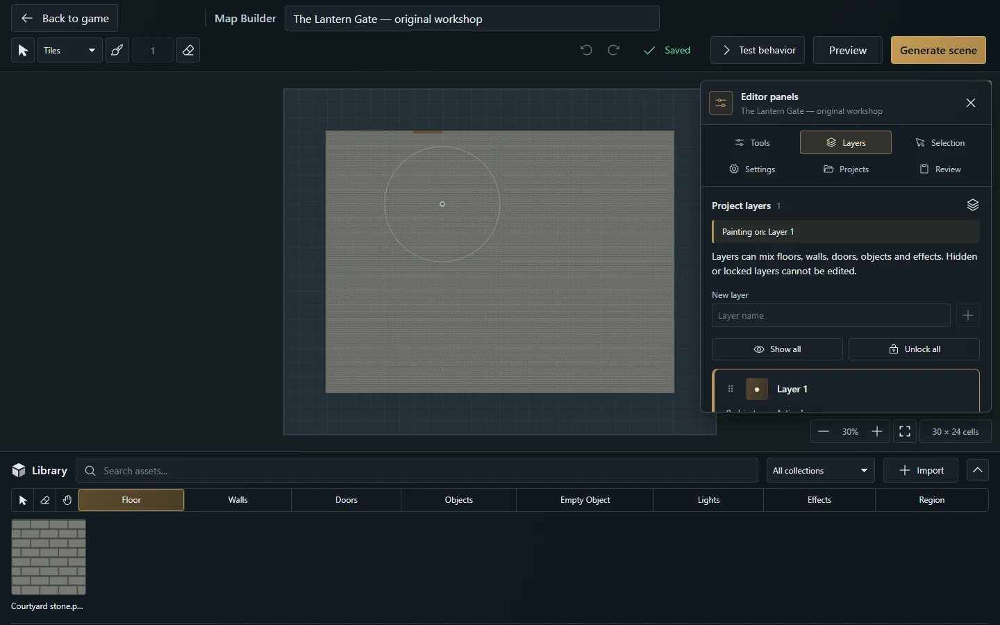

Referência do Map Builder
Fluxos do Builder, Smart Objects, automação, limites suportados e contratos de desenvolvimento.


Documentação · English · Universal VTT · Frontend
O Map Builder é a área do mestre da campanha para projetos de mapa editáveis. Desenhe com materiais ou importe uma imagem pronta, acrescente paredes, portas, objetos, luzes e efeitos nativos e depois gere ou atualize uma cena. O projeto continua editável separadamente da cena usada na mesa.
Este guia descreve a implementação do Map Builder na revisão documentada da 0.3.1. A direção dos Objetos Inteligentes distingue as capacidades implementadas das propostas.
Encontre o fluxo adequado
| Seu ponto de partida | Onde consultar |
|---|---|
| Construir uma sala nova | Construir a primeira sala |
| Escolher entre tiles, pintura suave e imagem de mapa | Escolher como começar |
| Organizar imagens, famílias e coleções | Construir mapas maiores |
| Organizar ou selecionar objetos do projeto | Seleção e camadas do projeto |
| Recuperar um salvamento com falha ou conflito | Salvamento automático, depois Solução de problemas |
| Aplicar edições à mesma cena do jogo | Atualizar uma cena gerada |
| Adicionar alavanca, tocha, região ou comportamento temporizado | Referência de Objetos Inteligentes |
| Importar/exportar um arquivo Universal VTT | Intercâmbio Universal VTT |
| Integrar documentos do projeto ou operações HTTP | Referência para desenvolvimento |
Acesso do mestre e pontos de entrada
Abra Cenas na campanha e escolha Nova cena → Map Builder. A pasta de cenas selecionada acompanha o projeto e a primeira cena gerada. Somente um mestre atual da campanha pode abrir ou gerenciar projetos do Builder; jogadores e streamers não podem editá-los. Abrir o editor não muda a transmissão dos jogadores.
Para retomar, use Painéis → Projetos ou clique com o botão direito em uma cena vinculada a um projeto e escolha Editar com MapBuilder. Ela tem o ícone de mapa vermelho no diretório do mestre. Uma cena importada como imagem comum ou por Universal VTT não tem projeto editável do Builder, a menos que tenha sido criada a partir de um projeto do Builder.
Projeto, prévia e cena do jogo
| Ação | Resultado | Efeito na cena do jogo |
|---|---|---|
| Editar, Desfazer/Refazer, salvamento automático ou Ctrl+S | Salvar o projeto editável | Exige Gerar cena ou Atualizar cena para aplicar à mesa |
| Prévia | Inspecionar a imagem com todas as camadas do projeto | Não grava na cena; a edição pausa |
| Simular no editor de Objeto Inteligente | Acompanhar um grafo local | Não executa efeitos no jogo |
| Testar comportamento | Ensaiar pelo servidor e relatar alterações previstas | O ensaio é revertido |
| Gerar cena | Criar a primeira cena nativa do projeto, reservada ao mestre | Abre para o mestre; preserva a transmissão anterior dos jogadores |
| Atualizar cena | Aplicar o projeto à cena vinculada | Clientes que veem essa cena recebem a atualização confirmada |
| Ativar para jogadores no menu da cena | Tornar a cena visível e transmiti-la | Jogadores conectados passam a vê-la |
Construir a primeira sala
Como mestre da campanha, escolha Nova cena → Map Builder. A pasta de cenas escolhida acompanha o projeto. Entrar não altera a cena atual nem a transmissão dos jogadores.
Informe o nome do mapa diretamente no cabeçalho. Abra Painéis → Configurações → Configuração do mapa para escolher dimensões, tamanho da célula e fundo. Volte a Camadas para renomear a Camada 1 ou adicionar outra camada nomeada.
Comece com o chão sólido, parede simples e porta nativa padrão, ou escolha Importar na Biblioteca inferior para usar suas imagens. Na modal de importação, escolha os arquivos de imagem e seu tipo: Chão, Parede, Porta ou Objeto. Opcionalmente, associe as imagens a uma família de assets existente ou crie uma nova. Selecione uma imagem ou família na biblioteca para usar seu pincel.
Abra Painéis → Ferramentas. Com Chão, escolha pincel livre, retângulo, círculo ou polígono e pinte o chão. Trace paredes e portas arrastando entre os pontos de início e fim. A porta é um segmento independente e não exige uma parede. Sobrepor uma parede na mesma direção substitui esse trecho.
Use Selecionar para mover objetos e abra Painéis → Seleção para editar suas propriedades. Pressione E para apagar objetos. Paredes e portas são movidas e excluídas independentemente. Desfazer/refazer recupera edições, inclusive objetos removidos. Segure Espaço e arraste para mover a câmera; a roda muda o zoom e 0 enquadra o mapa.
As alterações são salvas automaticamente; o cabeçalho mostra seu estado. Painéis → Projetos lista os projetos salvos para reabri-los. Novo projeto aguarda as mudanças pendentes antes de iniciar um projeto vazio.
Escolha Gerar cena. O builder salva o projeto, renderiza a imagem, usa o fluxo nativo de fatiamento e cria uma nova cena reservada ao mestre nessa pasta. O mestre abre essa cena; os jogadores continuam na transmissão anterior. No menu de contexto da cena, Ativar para jogadores torna a cena visível e a transmite em uma operação, inclusive para jogadores já conectados.
No diretório Cenas do jogo, a cena vinculada a um projeto salvo mantém o mesmo ícone de mapa, em vermelho. Clique com o botão direito e escolha Editar com MapBuilder, junto da ação Editar normal, para reabrir diretamente esse projeto. Entrar no editor não altera a cena dos jogadores. Depois de editar, o botão principal do cabeçalho passa a ser Atualizar cena e aplica as mudanças à mesma cena, mantendo sua identidade e o vínculo com o projeto. Imagens importadas e cenas sem projeto vinculado mantêm os controles normais. O vínculo com o projeto fica visível somente para o mestre.
Controles da área de trabalho
O canvas ocupa o espaço abaixo do cabeçalho, com uma Biblioteca horizontal na parte inferior. Painéis → Ferramentas reúne ferramentas de desenho, material ativo, opções de pincel, camada ativa e encaixe na grade. Entre o nome editável do mapa e o histórico, o cabeçalho oferece Selecionar, Pintar, tamanho do pincel e Apagar. Em seguida ficam Desfazer, Refazer, estado do salvamento, Prévia e geração de cena. Controles de visualização e dimensões em células ficam abaixo do canvas.
Selecionar (V) permite Shift-clique e arrastar uma caixa de seleção para vários objetos. Pintar (F) retorna ao pincel livre de chão na operação de pintura, usando o material atual e selecionando Chão na biblioteca. Seu tamanho fica sincronizado com Ferramentas: em Tiles, 1–20 células com encaixe na grade ou 0,05–20 sem encaixe; Pintura sempre usa 0,05–20 células. [ / ] também ajusta o tamanho. O campo de tamanho fica disponível para o pincel livre de chão, inclusive sua borracha por área. Apagar (E) exclui um objeto inteiro ao clicar; use Apagar chão, em Ferramentas, para apagar apenas parte do chão. Os controles de edição pausam na Prévia ou durante uma operação que exige acesso exclusivo. O salvamento automático em segundo plano permite continuar editando.
Com o pincel de chão ativo, segure Shift + botão esquerdo do mouse e arraste na horizontal para redimensioná-lo sem pintar. Arrastar para a direita aumenta o tamanho; para a esquerda diminui, com a área e o tamanho atualizados no ponto inicial. Solte para manter o tamanho ou pressione Escape para restaurá-lo. Funciona em Tiles e Pintura, inclusive na borracha por área; altera apenas a preferência do pincel, sem editar o mapa ou criar uma etapa de desfazer.
O campo de nome no cabeçalho aplica e salva nomes válidos após uma breve pausa na digitação. Enter ou Escape devolve o foco ao canvas; desfazer reverte uma alteração de nome aceita. O campo fica sincronizado com Configurações. Os botões de histórico no cabeçalho usam Ctrl+Z para desfazer e Ctrl+Shift+Z ou Ctrl+Y para refazer.
Biblioteca e barra de ferramentas
A barra da biblioteca oferece busca, Importar, categorias por tipo e acesso direto a Selecionar, Apagar, Mover vista, Objeto vazio e Região. Os pincéis de chão, parede, porta, objeto e luz ficam na mesma faixa; Efeitos mantém o seletor Partículas/Shaders. Esses atalhos fecham o painel auxiliar e devolvem o foco ao mapa. Em telas menores a faixa tem rolagem horizontal própria, inclusive pelo foco do teclado, sem mudar de posição ao trocar categorias. Busca, filtros, categorias e seta de recolher mantêm suas posições ao trocar para luzes ou efeitos; o espaço da importação permanece reservado quando ela fica oculta. Filtros sem resultados mostram uma mensagem. Os checkboxes usam o mesmo controle nativo compacto em configurações, camadas e propriedades, com ativação pelo rótulo e pela tecla Espaço. Sua seta recolhe os cards, mantendo a barra acessível. Ao entrar, Chão aparece destacado e a galeria mostra apenas imagens classificadas como Chão neste projeto. Clicar em Chão, Parede, Porta ou Objeto filtra a galeria e ativa a ferramenta correspondente. Escolher um preset de luz ou efeito nativo ativa sua ferramenta de posicionamento. O seletor de material em Ferramentas acompanha o pincel ativo e inclui sua aparência padrão.
Seleção e camadas do projeto
Painéis, no canto superior direito do mapa, abre um painel auxiliar com as abas Ferramentas, Camadas, Seleção, Configurações, Projetos e Revisão. Fechar o painel mantém a biblioteca visível. Selecionar ou pintar não abre o painel automaticamente. As propriedades dos objetos ficam em Seleção e no menu de botão direito do objeto. Selecione um objeto e pressione Shift+F10 ou a tecla de menu de contexto para abrir o mesmo menu. Em telas de toque, use Opções do objeto no início das propriedades da seleção.
O menu abre modais separadas de Propriedades, Aparência e Comportamento, além de Componentes da tocha, Filtros de presença, editor nativo ou Editar nós, conforme o elemento selecionado. As mudanças de propriedades salvam ao aplicar cada campo; Desfazer as reverte. Duplicar, Girar e Excluir também ficam no menu.
Para um Objeto ou Objeto vazio, escolha Modelos prontos e um modelo da lista. Os 14 modelos incluem baú, livro, altar, sino, armadilha de aviso, placa de pressão, desafio de dados, início de missão, conclusão de missão, placa de entrada, interruptor temporizado e controles de porta. Os mesmos modelos aparecem em Comportamento e no Catálogo de objetos do editor de nós. Busque no catálogo e configure porta, diário, destinatários ou dados conforme necessário. Marque Adicionar som ao ativar para escolher um som da campanha e seu volume, ou Usar imagem ao ativar para escolher outra imagem de Objeto. Opções desmarcadas não adicionam som nem substituição de imagem. O estado inativo mantém a imagem original; Objetos vazios continuam sem imagem. Aplicar instala os nós editáveis em uma etapa de desfazer; fechar o catálogo mantém o objeto inalterado. Substituir nós já autorados exige confirmação.
Selecione um elemento e edite Nome do elemento (ou Nome do objeto/Nome da região) para nomeá-lo sem alterar o arquivo da imagem. Chãos, paredes, portas, objetos, luzes, partículas, shaders e regiões aceitam nomes de até 120 caracteres. Pressione Enter ou saia do campo para aplicar e salvar automaticamente; Escape descarta a edição pendente do campo. Camadas, alvos de comportamento, escolhas de luz/porta e a rede da cena mostram os nomes definidos. Limpar um nome opcional restaura o rótulo normal; Objetos vazios, regiões e shaders mantêm um nome obrigatório. Desfazer/refazer e duplicação preservam os nomes. Renomear conserva a identidade do elemento e as conexões dos nós; Atualizar cena aplica o nome à cena existente. Dois cliques numa porta do mapa abrem seu editor de comportamento na modal Objeto Inteligente. Revisão mostra o resumo do projeto e a ação de gerar cena.
O cabeçalho do painel mantém o nome do mapa visível. As seis abas identificadas ficam disponíveis em duas linhas, inclusive em telas estreitas, e cada aba guarda sua própria posição de rolagem. Use as setas para trocar de aba, Home/End para ir à primeira/última, e Escape fora de um campo de texto para fechar o painel. Fechar devolve o foco ao controle que o abriu e preserva a seleção; clicar na aba atual a mantém aberta.
Ferramentas coloca material atual, camada ativa e configurações do pincel antes da paleta compacta de ferramentas. Dureza e intensidade da Pintura aparecem juntas; a ajuda expansível reúne instruções e atalhos do pincel. Seleção oferece Selecionar no mapa quando não há objetos selecionados. Projetos mantém nomes longos legíveis, e Revisão agrupa mapa e contagem de objetos antes das ações da cena. Abrir painéis e navegar entre eles não altera o mapa.
Seleção coloca as propriedades editáveis antes das miniaturas de materiais para mudar a aparência do objeto selecionado. Camadas organiza camadas nomeadas do projeto: crie, renomeie, reordene, oculte ou bloqueie camadas e escolha a camada ativa para novos objetos. Mova os objetos selecionados entre camadas em Seleção ou com Mover para cá na camada de destino. A lista mostra primeiro a camada superior, com contagens e estados de ativa, oculta e bloqueada. Pintar em, em Ferramentas, troca a camada ativa. Selecionar seleciona os objetos editáveis de uma camada; Isolar a exibe sozinha temporariamente, incluindo luzes e efeitos nativos. Mostrar todas encerra o isolamento e mostra todas as camadas; Desbloquear todas remove seus bloqueios.
Operações de camadas
Arraste a alça de uma camada ou use suas setas para mudar a posição. Expanda Conteúdo da camada para selecionar um objeto. Duplicar camada copia uma camada desbloqueada e desloca todo o conteúdo exatamente uma célula à direita e uma abaixo. A cópia aparece imediatamente acima da original, visível e desbloqueada, com novos IDs e referências remapeadas entre os Objetos Inteligentes copiados. A operação é recusada sem alterações se a cópia sair do mapa, sobrepuser portas ou exceder os limites do projeto. Duplicar ocupa uma etapa de desfazer.
Mesclar abaixo move uma camada visível e desbloqueada para a camada imediatamente inferior, também visível e desbloqueada. A ordem de pintura, as identidades dos objetos e as referências de Objetos Inteligentes são preservadas. Uma mesclagem ocupa uma etapa de desfazer. Uma camada com borrachas de terreno não pode ser mesclada sobre uma camada inferior com pisos, pois isso mudaria quais pisos essas borrachas afetam. Exclua uma camada vazia e desbloqueada após mover ou remover seus objetos, inclusive a última camada. Crie uma camada visível e desbloqueada antes de voltar a desenhar. Nomes, ordem, visibilidade e bloqueio são salvos com o projeto. Objetos de camadas ocultas ou bloqueadas não podem ser editados. Ocultar uma camada muda a vista do editor; a geração inclui todas as camadas do projeto.
Prévia
Prévia mantém o mapa no lugar e oculta grade, seleção, guias do pincel e contorno do mapa. O desenho e a edição de propriedades ficam pausados, enquanto mover a vista, ajustar o zoom, salvar e gerar cena continuam disponíveis. A prévia mostra temporariamente todas as camadas, inclusive as ocultas no editor. Voltar à edição restaura a visibilidade anterior e retoma a edição.
Escolher como começar
| Método | Quando usar | O que permanece editável |
|---|---|---|
| Tiles | Salas em grade, materiais repetidos, formas precisas ou contornos definidos sem encaixe | Imagens/formas concretas do chão, paredes e demais objetos do projeto |
| Pintura | Transições suaves de terreno e mistura gradual de materiais | Traços e suas máscaras, com os mesmos objetos e camadas do projeto |
| Importar mapa pronto | PNG/JPEG/WebP/TIFF finalizado para traçar ou decorar | Uma imagem de fundo e os objetos colocados sobre ela |
| Importar Universal VTT | .uvtt, .dd2vtt ou .df2vtt com grade/paredes/portas/luzes | Objetos nativos de cena; cria uma cena separada, não um projeto do Builder |
Tiles e Pintura são modos do mesmo projeto; alterná-los preserva o trabalho existente. Um fundo de mapa pronto pode acompanhar qualquer um deles. Para formatos aceitos, avisos e limites de intercâmbio, siga o guia do Universal VTT.
Tiles e Pintura
O seletor de modo no cabeçalho alterna entre Tiles e Pintura no mesmo projeto. Projetos novos começam em Tiles. Mudar de modo preserva chão, paredes, portas, objetos nativos, camadas e câmera; a mudança ocupa um passo de desfazer e fica salva no projeto.
Tiles usa materiais, tiles de imagem e famílias de assets. Com encaixe na grade, substitui as células cobertas; desligar o encaixe mantém o posicionamento e as formas contínuas. Pincéis, retângulos, círculos, polígonos, preenchimento, borracha por área e captura de material compartilham o mesmo projeto, camadas e histórico. Paredes, portas, objetos, luzes/efeitos nativos, prévia e geração de cenas continuam disponíveis nessa área de trabalho.
Projetos novos começam com uma Camada 1 vazia e renomeável. Ela pode misturar chão, paredes, portas, objetos e efeitos nativos; nenhuma camada é reservada a um tipo de objeto. Abra Painéis → Camadas para renomeá-la ou adicionar suas próprias camadas nomeadas. Importar assets, salvar e gerar um mapa vazio apenas com seu fundo continuam disponíveis. Projetos existentes mantêm suas camadas originais.
Pintura de terreno
Escolha Pintura no cabeçalho e selecione uma imagem ou família de chão na biblioteca. Arraste no mapa para misturar esse material ao chão existente com um pincel circular contínuo. A pintura de terreno usa posições fracionárias, independentemente do encaixe usado em Tiles; a visibilidade da grade continua sendo sua escolha. Voltar a Tiles restaura seus controles de encaixe sem converter os traços existentes.
O campo de tamanho no cabeçalho e Painéis → Ferramentas compartilham o diâmetro do pincel, de 0,05 a 20 células. Dureza da borda (%) controla o centro sólido e a suavidade da borda externa. Intensidade do pincel (%) controla quanto cada carimbo acrescenta material. Segurar o ponteiro pressionado e parado continua acumulando material; passar pela área novamente aprofunda a mistura. As texturas preservam sua escala e orientação no mapa enquanto materiais diferentes se misturam.
Em Ferramentas, escolha Operação → Apagar chão para uma borracha suave por área com o mesmo tamanho, dureza e intensidade. Ela apaga pisos anteriores da camada ativa, revelando camadas inferiores ou o fundo; outras camadas, paredes, portas e objetos nativos são preservados. Pintura adicionada depois não é afetada pela borracha anterior. Apagar (E) no cabeçalho continua excluindo um objeto inteiro.
Cada gesto concluído ocupa uma etapa de desfazer. Escape cancela o traço ativo, inclusive a pintura acumulada com o ponteiro parado. Camadas bloqueadas ou ocultas não podem ser pintadas. A Prévia pausa a edição; salvar/reabrir, gerar e atualizar a cena vinculada preservam as máscaras suaves e as texturas misturadas.
Importar um mapa pronto
Escolha Biblioteca → Importar → Importar mapa pronto, ou use a mesma ação em Painéis → Configurações ou Projetos. Envie uma imagem PNG, JPEG, WebP ou TIFF (até 25 MB), ou escolha uma imagem já existente nesta campanha. Defina largura e altura em células e tamanho da célula. Um projeto vazio sugere uma grade dentro dos limites a partir das dimensões da imagem; confira esses valores com a grade original do mapa.
A imagem preenche o mapa uma única vez, abaixo de todas as camadas. Acrescente paredes, portas, objetos, luzes e comportamentos sobre ela. O fundo independe das categorias de pincel e não se repete como textura de chão. Substituí-lo mantém os objetos nas posições atuais; dimensões que deixariam objetos fora do mapa são recusadas. Remover imagem do mapa em Configurações retira o fundo sem excluir a imagem da campanha. Importação, substituição e remoção usam desfazer/refazer e salvamento automático, e aparecem nas cenas geradas ou atualizadas.
Construir mapas maiores
Biblioteca, famílias e coleções
Busque imagens pelo nome na biblioteca e escolha uma categoria para filtrar por tipo. Classificações, nomes, coleções e famílias opcionais pertencem ao projeto; esses rótulos não renomeiam imagens da campanha usadas em outros lugares.
Importar abre a modal de importação da aplicação. Escolha uma ou mais imagens, defina seu tipo como Chão, Parede, Porta ou Objeto e, opcionalmente, escolha ou crie uma família de assets. Você também pode escolher ou informar uma coleção. O tipo, a família e a coleção escolhidos valem para todos os arquivos desse envio. Luzes não usam assets de imagem e ficam fora desse fluxo de importação.
Cada categoria mostra apenas as imagens deste projeto com o tipo selecionado. Imagens da campanha sem tipo no projeto continuam disponíveis em Imagens sem tipo, em Painéis → Ferramentas → Material. Selecione uma ali para atribuir o tipo da ferramenta ativa; seu card passa a aparecer na categoria correspondente. Essa classificação não altera a imagem da campanha nem seu uso em outro projeto.
Use o filtro Coleção da biblioteca para mostrar uma coleção ou Todas as coleções. Abra Configurações da biblioteca, abaixo dos cards, para editar o nome, a coleção e o tipo da imagem selecionada neste projeto. Role dentro da biblioteca para alcançar esses controles; ela mantém a altura configurada. Coleções são nomes opcionais de até 80 caracteres, com espaços das bordas removidos. O card de uma família aparece quando ao menos um membro pertence à coleção selecionada; escolher a família continua pintando com todos os seus membros.
Uma família de assets agrupa variações do mesmo material ou objeto, como três tiles de chão de masmorra. Os nomes de família pertencem a este projeto, têm espaços nas bordas removidos, devem conter de 1 a 80 caracteres e são comparados exatamente. Todas as imagens de uma família precisam ter o mesmo tipo. Selecione o card de uma família na biblioteca ou escolha a família no grupo de famílias do seletor de material para pintar com todos os seus membros. As imagens individuais continuam disponíveis para escolher uma variação específica.
Dê dois cliques no card de uma imagem existente para abrir a modal de edição do asset e mudar seu nome, tipo, família ou coleção. Uma imagem já usada no mapa não pode mudar de tipo; envie uma cópia separada para usá-la com outro pincel. Adicionar ou remover um membro da família afeta as próximas pinturas; isso não troca imagens já pintadas.
Remover asset nessa modal pede confirmação na modal da aplicação e exclui a imagem da campanha inteira. A limpeza também alcança outros projetos salvos e cenas nativas que usam a imagem, preservando a geometria de chão, paredes e portas. Outras alterações não salvas no projeto atual são mantidas. Desfazer não recupera o arquivo excluído.
Pincéis de Tiles, borracha e amostragem
Em Tiles, a ferramenta de chão oferece cinco formas de desenhar:
Pincel: arraste com um pincel quadrado ou redondo. Com o encaixe ligado, a pintura usa células; o carimbo redondo fica centralizado na célula do ponteiro, e o quadrado começa nela. Com o encaixe desligado, ambos seguem o ponteiro continuamente, centralizados nele, com tamanhos fracionários a partir de 0,05 célula. Os traços conectam as posições sem deixar espaços. Uma guia mostra a área real. Use os botões de tamanho ou [ / ] para diminuir/aumentar o pincel.
Retângulo: arraste entre cantos opostos para preencher uma área retangular.
Círculo: pressione no centro e arraste para definir o raio.
Polígono: clique em pelo menos três vértices e pressione Enter ou dê dois cliques para concluir. Concluir e Cancelar oferecem as mesmas ações na aba Ferramentas. Pressione Escape para cancelar a forma inacabada.
Preenchimento (G): substitui células conectadas com o mesmo material e rotação na camada ativa. Variações da mesma família de chão contam como o mesmo material; espaços vazios formam sua própria região. A conexão usa as quatro células vizinhas. Com o encaixe desligado, a ferramenta vira Preencher forma: muda o material do chão clicado, preservando exatamente seu contorno e os recortes apagados.
Encaixar na grade controla a geometria do chão e a posição do ponteiro. Desligado, retângulos usam cantos fracionários, círculos possuem contorno redondo suave, polígonos conservam os vértices desenhados e os traços seguem caminhos livres. Essas formas continuam livres ao salvar, reabrir e gerar a cena. A visibilidade da grade é uma configuração independente.
Escolha Operação → Apagar chão para remover apenas a área coberta pelo pincel ou por uma forma. Outras camadas e tipos de objeto permanecem intactos. Apagar parte de um chão grande preserva seus trechos descobertos. Com o encaixe desligado, a borracha acompanha a mesma geometria livre do pincel e das formas. Ao recortar retângulos antigos por células, uma operação que deixaria fragmento menor que seu mínimo de 0,05 célula é rejeitada sem alterá-lo. Use Conta-gotas (I) ou Alt-clique num chão da camada ativa para reutilizar sua imagem específica e a rotação da textura. A captura retorna ao pincel de pintura. Apagar (E), em Ferramentas, exclui um objeto inteiro ao clicar; Mover (H) desloca a vista.
A pintura com encaixe preenche células da grade. Ao pintar material novo ou diferente, uma família sorteia um membro para cada célula e salva a referência dessa imagem em um tile de chão de 1 × 1. A pintura livre escolhe uma imagem específica para o traço ou forma inteira. As escolhas permanecem iguais durante a prévia do gesto, desfazer/refazer, reabertura e geração de cena. Famílias de paredes, portas e objetos sorteiam uma imagem a cada novo posicionamento. Cada traço ou forma completa ocupa uma etapa do histórico de desfazer.
Em Tiles, pintar o mesmo chão novamente mantém a área como está, sem adicionar objetos ou uma etapa de desfazer. Variações existentes que pertencem à família escolhida mantêm suas imagens. Com encaixe ligado, cada célula igual é ignorada individualmente. Sem encaixe, um traço ou forma é ignorado quando toda sua área já tem o mesmo material, inclusive quando vários pisos dividem essa cobertura. Furos e outro material pintado sobre esse chão ainda precisam ser pintados.
Um chão diferente substitui a área coberta na camada ativa, removendo o material antigo por baixo. Um traço livre que atravessa materiais iguais e diferentes substitui toda sua área. A geometria fora dessa área e o chão de outras camadas permanecem intactos. Abrir um projeto existente não reescreve seus pisos. O projeto mantém o limite combinado de 2.000 objetos. Se um traço ou forma ultrapassaria esse limite, a operação inteira é rejeitada sem mudar o mapa.
Luzes, efeitos e janelas de edição nativas
Painéis → Ferramentas controla o tamanho do carimbo de chão, a espessura de paredes/portas, a orientação da textura do chão e as dimensões/rotação de objetos conforme a ferramenta ativa. Seu seletor de material também escolhe uma família, uma imagem da biblioteca ou a aparência padrão. Encaixar na grade ativa ou desativa o encaixe. Objeto, em Ferramentas, posiciona uma imagem dentro da caixa configurada, preservando sua proporção. Luzes na biblioteca oferece os presets Constante, Tocha e Pulso do VTT. Escolha um e clique no mapa para posicionar uma luz nativa. A Seleção expõe raios forte/fraco, cor, intensidade, animação, ângulo do cone, rotação, elevação e estado ativo. Posicionar luzes exige iluminação dinâmica ativa no servidor. Luzes não usam assets de imagem.
Efeitos oferece os perfis de partículas e os presets de shaders nativos do VTT. Escolha um e clique no mapa; depois ajuste suas propriedades em Seleção: tipo, densidade e escala de partículas ou raio, opacidade, intensidade, velocidade e modo de mistura de shaders, além de posição, rotação, cor, estado ativo e interação com a luz. Efeitos são objetos do projeto, com camadas, seleção, movimento, duplicação, rotação, exclusão e desfazer/refazer. Seu centro fica dentro do mapa; a área visual pode se estender a partir dele, como o raio de uma luz.
As janelas de edição do jogo estão disponíveis dentro do builder. Dê dois cliques em uma parede, luz, emissor de partículas ou shader, ou use sua ação de edição em Seleção. As janelas de luzes e efeitos são os mesmos componentes usados na mesa: shaders incluem o editor GLSL completo, a biblioteca de presets e o assistente de prompt de IA; partículas e luzes expõem seus próprios controles nativos. O assistente copia instruções e recebe código colado; ele não contata um serviço de IA.
Paredes e portas usam a janela Configurar parede/porta do jogo para aparência, bloqueios de movimento, visão, luz e som, limites de elevação e descoberta de portas secretas. Para uma porta, abra essa janela em Seleção; o clique duplo continua abrindo seu editor separado de comportamento de Objeto inteligente. Os ajustes da barreira física e os grafos de comportamento pertencem ao mesmo objeto e podem ser editados independentemente.
Cada janela edita um rascunho privado do projeto e mostra localmente a prévia das mudanças compatíveis. Salvar aplica toda a edição como uma etapa de desfazer. Cancelar, fechar e Escape descartam o rascunho. Abrir ou mudar uma janela nunca edita a cena selecionada no jogo nem a cena dos jogadores. Salvar/reabrir e gerar preservam esses ajustes; aplicá-los a uma cena vinculada exige Atualizar cena.
Em Efeitos, o seletor da biblioteca mostra Partículas ou Shaders, filtra a busca e ativa a ferramenta com seu último preset sem posicionar um objeto ou criar uma etapa de desfazer. Voltar a uma categoria de imagens restaura o filtro de coleção anterior.
O canvas e a Prévia usam o renderizador animado nativo da mesa para essas luzes e efeitos, considerando paredes e aberturas de portas. A camada visual acompanha a câmera e a visibilidade do builder; a Prévia mostra temporariamente todas as camadas do projeto. Camadas de efeitos ocultas ou vazias liberam o renderizador. Ao gerar ou atualizar a cena, esses elementos continuam sendo objetos nativos dinâmicos, fora da imagem de fundo, e podem ser editados com as ferramentas normais do VTT.
Com o encaixe na grade ativo, os gestos normais de parede seguem as bordas horizontais ou verticais das células e usam interseções inteiras. Pontas e bordas existentes próximas têm prioridade e podem ser fracionárias; prolongar uma ponta fracionária preserva essa âncora. Desative o encaixe para desenhar paredes diagonais ou usar coordenadas fracionárias. Com o encaixe ativo, mover uma seleção que contém paredes usa deslocamentos de células inteiras. Abrir um projeto salvo não realinha paredes ou portas existentes. Perto das bordas, um grupo com paredes para no último deslocamento inteiro permitido, sem usar uma sobra fracionária. Todos os objetos mantêm suas posições relativas.
Com Selecionar, Shift e clique adiciona ou remove objetos individuais, e arrastar numa área vazia seleciona os objetos que interceptam o retângulo. Selecionar tudo inclui objetos editáveis de camadas visíveis e desbloqueadas. Duplicar e Girar atuam sobre toda a seleção; giros de 90 graus transformam chão e orientação da textura junto com paredes, portas, objetos e luzes. Mover um grupo usa um único deslocamento limitado às bordas para preservar posições relativas. Uma transformação inválida não muda nada, inclusive quando causaria sobreposição de portas. Cada operação ocupa uma etapa do histórico de desfazer.
Encontros e nós de parede
Selecione uma parede com Selecionar para mostrar os círculos das pontas e as alças de mais. Arrastar uma ponta move todas as paredes que compartilham aquele ponto na mesma camada editável, inclusive paredes com materiais ou espessuras diferentes. Portas mantêm sua própria geometria. Camadas bloqueadas ou ocultas não podem ser editadas por essas alças.
O + central divide a parede em dois segmentos. Arraste-o para criar e mover o novo canto em um único gesto. O + ao lado de cada ponta prolonga a parede: arraste-o ou clique nele e depois no mapa para confirmar a nova ponta. Pontas e bordas editáveis próximas atraem a ponta; conectar a uma borda cria um nó em T compartilhado. Esse encaixe por proximidade também funciona com a grade desligada.
Escape cancela um arraste ou prolongamento armado. Cada movimento de nó, divisão ou prolongamento concluído ocupa um passo de desfazer. Pelo teclado, Enter ou Espaço ativa uma alça de mais; as setas movem uma ponta por uma célula com encaixe na grade ou por 0,1 célula sem ele. Shift usa uma célula inteira. Enter confirma um prolongamento armado na posição atual do ponteiro. Edições inválidas ou fora do mapa deixam o projeto intacto.
Instruções de prolongamento e mensagens de recuperação aparecem no canto inferior esquerdo do canvas, alinhadas ao zoom. Em telas estreitas, as mensagens ficam acima dos controles de visualização e quebram linha sem cobrir seus botões.
Cantos conectados e encontros em T usam a arte de parede unida no canvas, na Prévia e na imagem gerada. Segmentos colineares contíguos da mesma camada, imagem e espessura compartilham a origem e a direção da textura, preservando o padrão quando um segmento é invertido. Paredes isoladas mantêm a direção autoral. Aberturas de portas continuam livres. Esses encontros visuais não acrescentam paredes de colisão nem reescrevem pontos salvos ao abrir um projeto.
Rotação de portas
Selecione uma porta e escolha Ponto de ancoragem da rotação nas propriedades ou no editor do jogo: Início da porta, Centro da porta ou Fim da porta. O marcador da porta selecionada mostra o pivô. Girar mantém esse ponto fixo; portas existentes usam o centro por padrão. Com uma âncora explícita, abrir gira a imagem em 90° ao redor desse ponto e fechar restaura a imagem. Padrão (centro) mantém o comportamento original de ocultar a imagem ao abrir. Aparências ocultas explícitas do Blueprint continuam ocultas. Vários objetos giram em torno do centro da seleção. A escolha acompanha desfazer/refazer, salvamento automático, duplicação e atualizações da cena gerada, e também controla a rotação de uma porta individual com a ferramenta Selecionar do jogo.
Objetos vazios
Escolha Biblioteca → Objetos → Objeto vazio, ou Painéis → Ferramentas → Objeto vazio, e clique ou arraste para colocar um objeto sem imagem. Em Seleção, edite nome, tamanho, rotação e camada. Selecionar, mover, duplicar e selecionar vários funcionam como nos demais objetos.
Dê dois cliques para editar os mesmos nós, estados, sinais e ações de Objeto Inteligente de um objeto comum. Os eventos apenas iniciam a sequência; os nós de lógica tomam as decisões. Use-o como controlador de luzes, sons e outros elementos sem colocar uma imagem. No jogo, ele vai diretamente para a camada GM. O mestre vê seu marcador sutil em todas as abas e o seleciona ou edita na aba GM. Continua editável no builder e é omitido dos dados de cena de jogadores/streamers. Cenas antigas recebem a mesma apresentação privada imediatamente, sem precisar gerar de novo. Edições nativas, cópias e atualizações mantêm o objeto no GM. Jogadores continuam disparando seus eventos de área ao mover tokens; ações de área/sinal com espera mantêm as permissões originais do jogador. Cliques diretos do jogador não o ativam. Ele não recebe imagem própria. O catálogo de nós é o mesmo para todos os tipos de elemento: Trocar imagem e Definir aparência podem controlar outro objeto por uma conexão explícita em Alvo. Nós visuais sem alvo compatível continuam editáveis e são ignorados com um diagnóstico na execução. Desfazer/refazer, salvamento automático e atualizações da cena mantêm sua identidade e seu comportamento.
Para imagens comuns, alavancas e tochas, use Mover para camada de imagens do GM no menu de contexto para ocultá-las. Vá à aba GM, clique com o botão direito no objeto e escolha Mover para camada de imagens para devolvê-lo ao jogo. A aba Imagens edita imagens públicas; as privadas são selecionadas em GM. Devolver uma seleção mista mantém Objetos vazios no GM. Imagens privadas e marcadores de Objetos vazios continuam visíveis para o mestre com 55% de opacidade em todas as abas; desenhos privados também multiplicam sua opacidade original por 55%. Jogadores e streamers não recebem esses elementos privados. Trocar de aba atualiza os controles de edição sem reconstruir a cena renderizada.
Salvamento automático
As edições do projeto são salvas automaticamente após uma breve pausa: nome do mapa, traços concluídos, objetos, camadas, configurações, desfazer e refazer. O cabeçalho mostra se há alterações aguardando, sendo salvas ou já salvas. Escritas em segundo plano conservam a seleção e o histórico e não interrompem a pintura. O botão de estado e Ctrl+S continuam disponíveis para sincronizar imediatamente.
Os grafos dos Objetos Inteligentes também aplicam edições válidas automaticamente. Não há uma etapa manual de Salvar/Cancelar: Fechar ou Escape aguarda as edições válidas pendentes. Campos inválidos permanecem visíveis para correção e impedem o fechamento. Desfazer/refazer também é salvo. Abrir ou fechar um grafo atual sem mudanças não cria um blueprint vazio. Grafos de eventos removidos são descartados ao carregar dados anteriores.
Uma resposta perdida repete a mesma operação lógica e seu UUID; uma escrita já confirmada não é aplicada de novo. Um conflito de revisão pausa o salvamento automático e conserva o rascunho local. Recarregar projeto salvo adota explicitamente a versão atual do servidor; Salvar uma cópia conserva o mapa local com outra identidade. Uma falha mantém as edições nesta aba e oferece controles de recuperação. Num conflito de Objeto Inteligente em jogo, novas escritas ficam pausadas até reabrir o editor com a versão atual; a revisão anterior nunca é substituída silenciosamente. Descartar alterações descarta apenas mudanças ainda não confirmadas. Recarregar esta aba recupera uma escrita incerta confirmando seu recibo original antes de enviar edições locais mais recentes. Rascunhos antigos sem o corpo dessa escrita pausam para recarregar ou copiar explicitamente. Se o carregamento inicial da biblioteca ou do projeto falhar, a edição permanece bloqueada e Tentar novamente recarrega sem criar um projeto vazio substituto. Corrigir ou desfazer uma edição rejeitada limpa a tentativa de salvamento rejeitada, evitando que recarregar a aba a trate como escrita incerta. Após reconectar, Tentar novamente no editor de Objeto Inteligente também retoma o salvamento pendente do projeto com o recibo original; conflitos de revisão continuam exigindo recuperação explícita.
Voltar ao jogo aguarda as mudanças pendentes do projeto. Se o salvamento falhar, o editor permanece aberto para tentar novamente ou descartar explicitamente. Salvar automaticamente persiste a configuração; não gera uma cena nem executa ações do grafo. Gerar cena e Atualizar cena continuam sendo ações explícitas. Editar um elemento em jogo aplica a configuração do grafo ao dono e ao projeto vinculado pelas revisões existentes, sem acionar seu mecanismo.
Atualizar uma cena gerada
Guarde o projeto para editar o mapa depois. Gerar cena cria a primeira cena;
depois disso o botão principal do cabeçalho passa a ser Atualizar cena.
Reabrir o projeto pelo diretório de cenas do jogo atualiza essa mesma cena, sem
criar outra. O botão do cabeçalho e Painéis → Revisão → Atualizar cena
substituem o fundo fatiado e os recursos gerados por este
projeto na cena vinculada. Tokens, imagens, luzes, partículas, shaders, desenhos, névoa e outros
conteúdos inseridos manualmente permanecem no lugar. Nome, pasta, visibilidade,
transmissão e configuração do ambiente continuam sob controle do VTT. Portas
nativas existentes conservam seu estado aberto/fechado/trancado durante a atualização.
Luzes, partículas e shaders também conservam seu estado de ativação durante o jogo
quando a configuração de ativação correspondente não mudou no projeto. Uma
mudança intencional dessa configuração no projeto é aplicada na atualização.
A descoberta de portas secretas segue a mesma regra: a descoberta durante o
jogo é preservada enquanto o ajuste discovered de autoria não mudar; uma
alteração intencional no projeto é aplicada na atualização.
Ações autorizadas de Mover/Girar reconhecem a geometria nativa no histórico de propriedade, conservando a fonte editável; atualizar a cena reaplica posições e ângulos autorados. Edições manuais no VTT em objetos gerados são importadas ao abrir o projeto, voltar à aba do navegador e antes de atualizar a cena. Mudanças compatíveis em nomes, geometria, imagens, luzes, efeitos e Blueprints aparecem no projeto editável; objetos gerados excluídos são removidos dele. Trechos de parede continuam editáveis de forma independente. Objetos adicionados diretamente à cena permanecem separados do projeto. Configurações de interação durante o jogo são preservadas quando seu padrão autorado não muda; uma mudança intencional na autoria é aplicada na atualização. A ativação de região é conservada enquanto ativação/camada autoradas não mudam; uma mudança intencional na autoria vence. Atualizações de configuração recalculam a base de ocupação sem executar grafos de presença.
Atualizações e sincronizações exigem as revisões atuais do projeto e da cena. Mudanças em propriedades diferentes são mescladas com as edições pendentes do projeto. Desfazer preserva as mudanças importadas do jogo ao reverter edições locais. Se a mesma propriedade tiver valores diferentes nas duas partes, a sincronização para e mantém o rascunho local; use Recarregar projeto salvo ou Salvar uma cópia para resolver. Mudanças de tipo de objeto e geometrias que o projeto não representa também param com um diagnóstico específico. Edições que ocorram durante a renderização ainda exigem nova sincronização. Mantenha dimensões e tamanho da célula ao atualizar cenas com conteúdo inserido manualmente. Projetos existentes nas versões 1/2 podem adquirir histórico de propriedade se os IDs originalmente gerados, dados nativos e geometria da grade ainda corresponderem exatamente, permitindo apenas mudanças no estado das portas durante o jogo. Abrir o projeto verifica a possibilidade sem gravar; salvar registra a propriedade comprovada antes de substituir o projeto antigo. Sem essa comprovação, a cena legada vinculada não pode ser atualizada por este projeto. O builder nunca deduz propriedade pela proximidade ou semelhança visual dos objetos. Use um projeto novo ao criar uma cena independente. Os assets enviados continuam na biblioteca de imagens da campanha.
Atalhos de teclado e ponteiro
Atalhos do mapa e das ferramentas valem quando o foco está fora de um campo ou texto editável. Os atalhos com Ctrl também aceitam Command no macOS. Editores modais têm seus próprios atalhos; uma operação exclusiva em andamento ou a Prévia pode desabilitar a edição.
| Atalho | Ação |
|---|---|
| V / F / E | Selecionar / pincel de chão / apagar um objeto inteiro |
| W / D / H | Ferramenta de parede / porta / mover vista |
| Shift-clique ou caixa de seleção | Adicionar/remover membros da seleção ou selecionar vários objetos |
| Ctrl+A / Ctrl+D | Selecionar objetos editáveis / duplicar a seleção |
| R | Girar a seleção em 90°; uma porta individual respeita o pivô configurado |
| Delete / Backspace | Excluir a seleção |
| Ctrl+Z / Ctrl+Shift+Z / Ctrl+Y | Desfazer / refazer |
| Ctrl+S | Enviar ao servidor as alterações válidas pendentes do projeto |
| [ / ] | Diminuir/aumentar o pincel de chão |
| Shift + arrastar com o botão esquerdo com pincel de chão | Redimensionar sem pintar; Escape restaura o tamanho anterior |
| I ou Alt-clique em um chão | Amostrar imagem e rotação da textura |
| G em Tiles | Preencher por balde com encaixe; preencher forma sem encaixe |
| Enter ou dois cliques ao desenhar um polígono | Concluir o polígono |
| Escape | Cancelar um gesto ativo; nos demais casos sair da Prévia, limpar seleção ou fechar o painel em foco, conforme o contexto |
| Espaço + arrastar, arrastar com o botão central ou Mover vista | Mover a câmera |
| Roda / + / - | Ajustar o zoom no ponteiro / centro da área visível |
| 0 / Home | Enquadrar o mapa |
| Setas com foco no canvas | Mover a câmera |
Limites práticos
O servidor valida esses limites; uma operação que excede um orçamento é recusada. O contrato para desenvolvimento lista limites adicionais de formas, renderização e Blueprints.
| Recurso | Limite |
|---|---|
| Largura e altura do mapa | 1–200 células cada |
| Tamanho da célula | 16–256 px |
| Imagem do mapa gerado | 16.777.216 pixels, ou o limite menor configurado pelo host |
| Camadas do projeto | 32 |
| Objetos combinados do projeto | 2.000 chãos, paredes, portas, objetos, luzes, partículas, shaders e regiões |
| Objetos nativos gerados | 5.000, incluindo segmentos de parede e superfícies gerenciadas |
| Imagens classificadas no projeto | 256 |
| Imagem enviada | 25 MB e 40 milhões de pixels decodificados |
| Documento do projeto | 1 MB, com limites separados de contornos e trabalho do pincel |
| Nomes | 120 caracteres para elementos; 80 para camadas, famílias e coleções |
Largura, altura e tamanho da célula compartilham o limite da imagem: não é possível usar simultaneamente seus máximos individuais. Traços muito detalhados podem atingir os limites de forma ou pincel antes de preencher a contagem de objetos. Divida uma área densa em traços mais simples ou reduza suas dimensões, em vez de repetir a mesma edição recusada.
Solução de problemas
| Sintoma | O que conferir e fazer |
|---|---|
| Desenhar não produz efeito | Saia da Prévia e escolha uma camada ativa visível e desbloqueada e uma ferramenta de desenho. Se não houver camadas, use Crie sua primeira camada. |
| Uma imagem sumiu da categoria | Confira o tipo no projeto e os filtros de busca/coleção. Imagens da campanha ainda sem tipo ficam em Ferramentas → Material. |
| A pintura ficou suave ou o preenchimento mudou | Confira Tiles/Pintura, encaixe, operação, dureza e intensidade. Apagar objeto e apagar área de chão são ferramentas separadas. |
| Uma imagem nova de mapa desloca ou corta o trabalho | Confira Largura/Altura em células e Tamanho da célula. A substituição mantém coordenadas; dimensões que excluiriam objetos são recusadas. |
| Um TIFF não tem miniatura | Alguns navegadores não mostram prévia de TIFF. O servidor continua validando uploads TIFF suportados; confira qualquer erro retornado. |
| O salvamento fica pausado | Corrija o campo destacado de configurações/propriedades/grafo ou desfaça a edição rejeitada. Campos inválidos do grafo também impedem fechar o editor. |
| O salvamento falhou após perder a conexão | Mantenha a aba atual e use Tentar novamente ao reconectar. Uma escrita incerta repete o recibo original; uma correção de validação usa uma nova operação. |
| Apareceu um conflito de revisão | Use Recarregar projeto salvo para adotar a versão do servidor ou Salvar uma cópia para preservar o rascunho local. Repetir Tentar novamente não atualiza silenciosamente uma revisão antiga. |
| A atualização informou objeto gerado alterado/excluído | Reabra o projeto ou volte à aba dele para sincronizar edições compatíveis do jogo. Se os dois editores mudaram a mesma propriedade, resolva com os controles de recarregar/cópia oferecidos; o projeto existente continua vinculado à cena. |
| Os jogadores ainda veem o mapa antigo | Confirme o sucesso de Gerar cena/Atualizar cena e confira qual cena é transmitida. Gerar uma cena privada não a ativa para jogadores. |
| Camadas ocultas do editor aparecem na Prévia ou na cena | Ocultar camadas ajuda a editar. Prévia e geração incluem todas as camadas; controle a privacidade durante o jogo pelas camadas GM/imagens da mesa. |
| O comportamento não fez nada | Confira evento inicial, ações explícitas, vínculos de Alvo, permissões de portas trancadas e pausa da automação. Use Testar comportamento e o Registro de automação para o diagnóstico. |
| Remover asset afetou outro mapa | Remover asset exclui o recurso da campanha. Para deixar de usar uma imagem só neste mapa, mude/remova seu posicionamento ou fundo. Desfazer não recupera o arquivo excluído. |
Referência de Objetos Inteligentes
Comece pelo elemento que deseja operar e conecte um evento inicial a ações explícitas. Um grafo vazio não alterna o estado implicitamente. A configuração do grafo salva automaticamente; a execução no jogo é uma ação separada.
| Objetivo | Referência |
|---|---|
| Criar uma alavanca ou tocha vinculada | Alavancas, Tochas compostas |
| Disparar ações quando tokens entram/saem | Regiões e placas de pressão, Objetos vazios |
| Compartilhar condições ou coordenar objetos | Condições compostas, Variáveis e sinais nomeados |
| Esperar, contar ou limitar repetições | Controles persistentes, Delay, Temporizador |
| Reutilizar ou inspecionar comportamento | Modelos, Rede da cena, Ensaio no servidor |
| Mudar uma superfície, apresentar mensagem ou mover o token responsável | Superfícies dinâmicas, Mensagens/diários, Teleporte |
A referência abaixo cobre o editor compartilhado de nós e os tipos de elemento suportados. A direção de desenvolvimento registra propostas; não é uma lista de controles adicionais disponíveis neste código.
Portas como Objetos Inteligentes
Cada elemento possui seu próprio blueprint. Portas, alavancas, tochas e regiões compartilham o editor, modelos reutilizáveis e a rede da cena do mestre. O editor usa o sistema de modais da aplicação e apresenta a caixa da instância real do elemento.
Dê dois cliques numa porta editável no mapa do Map Builder para abrir Objeto Inteligente. A modal tem três áreas: a lista Eventos à esquerda, o canvas do grafo no centro e os ajustes de aparência e a Simulação à direita. Em telas estreitas elas se empilham.
A caixa da instância mostra o nome e o estado atual real do elemento. Portas
oferecem Ao interagir (onInteract) e Ao destruir (onDestroy).
Objetos, incluindo alavancas, tochas e Empty Objects, também oferecem Ao entrar
na área (onAreaEnter) e Ao sair da área (onAreaExited). Regiões oferecem
Ao entrar na área (onAreaEnter), Ao sair
da área (onAreaExited) e Ao destruir. Sinais nomeados oferecem Ao receber
sinal (onSignal). A geometria e o estado inicial continuam em Seleção.
Eventos apenas iniciam a sequência conectada. Eles não comparam valores, escolhem estados nem trocam imagens. Use nós de lógica para decisões e nós de ação para alterações. Um mecanismo com blueprint e grafo de interação vazio não faz nada ao ser acionado; não existe alternância automática.
Para alternar uma alavanca por completo, conecte Ao interagir → Verificar estado: Desativada. Ligue Verdadeiro → Mudar estado: Ativada → Trocar imagem com a imagem ativa e Falso → Mudar estado: Desativada → Trocar imagem com a imagem inativa. As ações de estado e imagem pertencem à mesma sequência. Para uma tocha, use Normal/Girada; sua chama continua sendo uma ação independente. As condições leem o estado do início do evento, mesmo após uma ação de estado. Aparência padrão por estado continua como configuração visual opcional separada.
Eventos de área iniciam para cada token elegível que atravessa a borda. A ocupação da região muda apenas na primeira chegada e na última saída; testar primeira ou última presença é responsabilidade dos nós de lógica. Regiões não possuem interação direta. Ajustes de configuração não iniciam sequências de jogo.
Nos objetos, o tamanho e a rotação definidos no editor delimitam a área. Quando o centro de um token entra ou sai dessa caixa, o grafo correspondente começa, incluindo os dois eventos quando um movimento aceito atravessa toda a área. Esses eventos não alternam o estado nem trocam imagens. Use Contexto do evento para acessar o token e a quantidade de presenças, e nós de condição e ação para definir a resposta. Mover, redimensionar, girar ou importar objetos apenas atualiza a ocupação. Simular e Testar comportamento também aceitam os dois eventos de área dos objetos.
Para reutilizar o comportamento de outro objeto, conecte o evento da área a Interagir com objeto e ligue uma Referência de elemento em seu Alvo. Essa ação executa explicitamente o grafo Ao interagir do alvo, incluindo as ações conectadas de estado, imagem, luz e som. Mudar estado altera apenas o estado; não chama outro evento nem repete as ações de imagem do alvo. Objetos nativos sem blueprint mantêm sua alternância normal; um grafo de interação autoral vazio não faz nada. As cadeias compartilham os limites, a transação e o recibo da operação. Testar comportamento ensaia a cadeia completa; o botão local Simular apenas lista a interação solicitada, sem executar outros grafos. A interação do alvo é enfileirada após as ações do evento de origem, como os sinais nomeados. Ela segue a lógica já configurada no alvo, inclusive alternância.
O autosave salva as edições no projeto. Quando ele já está vinculado a uma cena, clique em Atualizar cena para aplicar os grafos alterados ao jogo. Apenas voltar ao jogo não atualiza essa cena. O indicador de salvamento e o editor de comportamento esclarecem essa diferença; a atualização mantém o ID da cena.
Ao receber sinal (onSignal) recebe um sinal nomeado de Emitir evento ou
de um temporizador único com o mesmo nome. Selecione um sinal nomeado para exibir
seu conector no nó da instância. O nome autoral do sinal permanece intacto. Não
há um ID separado para expiração de temporizador: os grafos signal:<nome>
existentes continuam sendo os receptores.
Ao destruir executa imediatamente antes de uma exclusão explícita no jogo, inclusive exclusão da seleção ou limpeza de uma camada nativa. Ele pode controlar outra luz, mudar outro elemento ou avisar um receptor de sinal enquanto o dono ainda existe. A remoção e seus efeitos usam a mesma transação; uma falha conserva o dono e reverte seus efeitos. Repetir o mesmo comando reutiliza seu recibo. Um comando pode remover até 32 donos com caminhos de destruição conectados. Apenas comandos nativos autorizados podem remover elementos. Com a automação pausada, o elemento é removido sem executar seu grafo de destruição.
Remover um elemento no Builder, atualizar uma cena gerada, mudar a configuração ou excluir um asset ou uma campanha não executa esse evento de jogo. Temporizadores e esperas do elemento removido são cancelados. Para continuar ações mais tarde, envie um sinal a outro elemento que permanecerá na cena e agende o trabalho nele. Testar comportamento prevê a remoção e mostra Removido neste teste, conservando o mapa real, o projeto e seu histórico.
Cada estado oferece três opções de aparência:
Aparência nativa: usar o material da porta enquanto fechada ou trancada e ocultar sua imagem enquanto aberta.
Imagem oculta: ocultar a imagem nesse estado, mantendo a geometria nativa.
Usar imagem: escolher uma imagem do projeto classificada como Porta para esse estado, inclusive uma imagem para exibir enquanto aberta.
Eventos oferece apenas os eventos de início disponíveis e sua quantidade de
nós. Não existem filtros de estado no evento. Carregar dados anteriores descarta
onChange e os grafos de entrada, saída e interação por estado; suas ações não
são migradas. Elementos e arquivos de assets continuam no lugar. Recrie essas
sequências em Ao interagir, num evento de área ou num sinal nomeado. A escolha
de aparência continua independente do grafo selecionado.
Cada evento ocupa uma linha no nó da instância, com seu conector à direita.
O cabo sai horizontalmente desse conector. Arraste dele para iniciar seu ramo,
mesmo quando outro evento estiver selecionado. Uma linha acompanha o ponteiro.
Solte numa área vazia do
canvas para abrir o seletor de nós naquela posição; escolher um tipo cria o nó
e conecta o ramo. Adicionar nó, ou dois cliques numa área vazia do canvas,
abre o mesmo seletor sem conexão. Digite no campo de busca para filtrar a lista:
trechos encontrados no nome ou na descrição do nó aparecem primeiro, e letras
digitadas na ordem dentro do nome do nó também encontram resultados, então tcs acha Tocar som. Enter
escolhe o melhor resultado e as setas percorrem as opções. Ele
oferece estas ações e condições:
| Nó | Configuração |
|---|---|
| Controlar luz | Escolher uma luz deste projeto e ativá-la ou desativá-la |
| Tocar som | Escolher um som existente na campanha e definir volume de 0 a 1 |
| Mudar estado | Solicitar Fechada, Aberta ou Trancada pelo estado nativo da porta |
| Verificar estado | Comparar o estado no início do evento e seguir Verdadeiro ou Falso; um valor ligado em Teste decide no lugar |
| Trocar imagem | Trocar, ocultar ou restaurar a imagem ativa deste elemento ou do elemento/grupo conectado ao Alvo |
| Interagir com objeto | Iniciar explicitamente Ao interagir no alvo, incluindo suas ações autorais de imagem, luz e som |
| Sequência | Executar as saídas 1 a 4 uma após a outra, cada ramo por completo antes do seguinte |
| Escolher caminho | Comparar um Valor tipado com os casos configurados e escolher um caso ou Padrão |
| Aleatório | Sortear um de dois a quatro caminhos de execução usando pesos inteiros |
| Ler propriedade | Nó de valor: ler o Estado atual ou o Estado anterior que a porta acabou de deixar |
| Comparar estado | Nó de valor: comparar um Valor de estado (o estado atual, sem conexão) com o escolhido e retornar Verdadeiro ou Falso |
| Todas as condições | Nó de valor: Verdadeiro quando todas as condições booleanas conectadas são verdadeiras |
| Qualquer condição | Nó de valor: Verdadeiro quando pelo menos uma condição booleana conectada é verdadeira |
| Ler variável | Nó de valor: ler uma variável tipada deste elemento ou cena, usando o padrão configurado quando ausente |
| Definir variável | Salvar um valor tipado neste elemento ou cena; um Valor conectado substitui o configurado |
| Comparar valor | Nó de valor: comparar valores booleanos, números ou textos e retornar Verdadeiro ou Falso |
| Emitir sinal | Enfileirar um evento nomeado para este elemento, um Alvo conectado ou receptores desta cena |
| Referência de elemento | Nó de valor: escolher uma imagem nativa, porta ou região de presença; sua saída Elemento alimenta uma entrada Alvo compatível |
| Grupo de elementos | Nó de valor: nomear uma lista ordenada de até 32 elementos, luzes ou sons e conectar sua saída tipada Alvos |
| Referência de luz | Nó de valor: conectar uma luz nativa a uma entrada Alvo compatível |
| Referência de som | Nó de valor: conectar um som da campanha a uma entrada Alvo compatível |
| Mover objeto | Mover cada alvo por um deslocamento X/Y em células |
| Girar objeto | Somar um ângulo em torno do centro de cada alvo ou do ponto de ancoragem da porta |
| Definir interação | Habilitar ou desabilitar a interação direta de jogadores com portas, alavancas e tochas |
| Definir região | Habilitar ou desabilitar a detecção de presença de uma região |
| Contexto do evento | Nó de valor: ler identidade da origem, dados do token, evento ou estado validados pelo servidor |
| Revelar | Marcar uma porta secreta ou invisível como descoberta: esta porta, ou a porta conectada em Alvo |
| Definir barreira | Fazer esta porta, ou a porta conectada em Alvo, bloquear ou liberar movimento, visão, luz ou som (o som também pode atenuar) |
| Controlar som | Parar um som da campanha que já toca na cena ou mudar seu volume |
Mudar estado, Trocar imagem, Interagir com objeto, Revelar e Ler propriedade têm uma entrada Alvo do tipo Elemento (laranja). Sem conexão, o alvo é o elemento editado; com uma Referência de elemento, é o elemento referenciado. Ações de estado e imagem são aplicadas diretamente na sequência atual; mudar o estado não inicia outro grafo. Interagir com objeto e Emitir evento enfileiram o grafo do alvo. A saída Próximo continua a sequência de origem antes desse grafo enfileirado executar, dentro do mesmo comando. Uma cadeia é limitada a 32 operações de elemento e 4 no mesmo elemento. Os receptores de um sinal com escopo Cena usam um orçamento separado de 256 entregas, de modo que uma única transmissão pode alcançar muitos ouvintes; cada receptor ainda conta para as suas 4 operações. Ultrapassar qualquer limite faz o comando inteiro falhar sem persistir nada, e o registro de automação mostra a cadeia com o limite atingido: um elemento que executou mais de 4 vezes (cadeia que se repete), mais de 32 operações de elemento (cadeia longa) ou mais de 256 entregas de sinal de cena. Uma cadeia iniciada por um jogador nunca tranca nem destranca uma porta, a menos que o mestre ajuste a opção Trancas daquela ação Mudar estado para Jogadores podem trancar ou destrancar: aí uma alavanca operada por um jogador pode destrancar outra porta, e um grafo de interação numa porta trancada pode abri-la. Sem a opção, a operação é pulada e registrada. Mudanças de barreira são estado de jogo, como o estado da porta: atualizações de cena as conservam. Uma referência cuja porta foi excluída continua no grafo marcada como Porta ausente; a ação que precisa dela é pulada e registrada como Alvo ausente. Escolher no mapa, num nó Referência de elemento ou Controlar luz, afasta a modal: clique na porta ou luz no mapa do builder para escolhê-la, ou pressione Escape ou Cancelar para manter o alvo atual. Duplicar portas juntas aponta as referências copiadas para as cópias; referências a portas fora do grupo copiado mantêm o alvo.
Nós de valor não possuem Entrada ou Próximo: são avaliados quando um nó executado lê seu valor. Seus conectores em losango indicam o tipo Estado (violeta) ou Verdadeiro ou Falso (ciano), com uma origem por entrada e tipos compatíveis. Por exemplo, conecte Ler propriedade: Estado atual → Comparar estado: Trancada → Verificar estado · Teste, iniciando Verificar estado em Ao interagir. Seu ramo Verdadeiro pode mudar o estado e tocar o som de destrancar. Estado atual para simulação fornece o retrato inicial do teste local; não é um filtro ou parâmetro do evento.
Trocar imagem é uma ação de imagem na sequência. Mudar estado → Trocar
imagem em onInteract aplica o estado solicitado e mantém a imagem escolhida.
Para mudar a imagem de outro objeto a partir de uma área, conecte Ao entrar na
área → Trocar imagem, escolha Usar imagem e ligue Referência de elemento
→ Alvo ao objeto que deve mudar. O alvo não precisa ter um grafo de interação.
Conecte Ao sair da área → Trocar imagem: Aparência nativa à mesma referência
para restaurá-lo. Um Grupo de elementos pode mudar várias imagens juntas. Isso
altera apenas a arte; não muda estado nem executa os eventos do alvo. Imagens
comuns guardam imagem-base, camada e caixa de forma privada durante a troca;
restaurar a aparência nativa remove a troca. Mover/redimensionar no jogo mantém
essa caixa de restauração atualizada. Geometria autoral inalterada preserva a
troca em Atualizar cena; mudanças manuais de geometria no jogo mantêm a
proteção existente de conflito. Objetos vazios e regiões continuam sem imagem
própria enquanto controlam outros elementos. Nós que precisam de recursos ficam
disponíveis quando esses recursos existem.
O evento não compara, alterna nem restaura imagens. Jogadores recebem apenas a
aparência resultante.
As luzes e os sons precisam existir no projeto ou na campanha para estarem disponíveis como alvos; caso contrário, o seletor mantém o tipo desativado e explica o motivo.
Os sockets são os círculos nas bordas dos nós: a Entrada à esquerda e as saídas à direita, coloridas por saída (Próximo dourado, Verdadeiro verde, Falso vermelho; os conectores da porta usam a cor do estado). As conexões assumem a cor da sua origem.
Conexões de valor também podem começar pela entrada: arraste Alvo até a saída Elemento de uma referência existente ou solte no espaço vazio para criar uma referência compatível. Clicar em Alvo abre o mesmo seletor filtrado. Escolha Referência de elemento e selecione o outro objeto no campo Elemento ou em Escolher no mapa. Essa ligação define o alvo; conecte o evento separadamente à Entrada da ação. Enter ou Espaço numa entrada de valor abre o seletor; Shift+Enter permite escolher uma saída compatível existente pelo teclado. Uma entrada já conectada mantém sua ligação até você removê-la.
Arraste de uma saída até a Entrada de um nó existente para conectá-los diretamente. Cada saída pode iniciar outros ramos. Pressione Escape, clique fora do seletor ou solte fora do canvas para cancelar o ramo pendente; sem criar um nó, o grafo permanece inalterado. Clicar numa saída e depois numa Entrada continua disponível. Com o foco numa saída, Enter ou Espaço abre o mesmo seletor de nós. Para conectar a uma entrada existente pelo teclado, pressione Shift+Enter na saída, use Tab até a Entrada e pressione Enter. As ações continuam pela saída Próximo; uma condição possui saídas Verdadeiro e Falso separadas. A versão 2 admite vários ramos por saída, percorridos em profundidade na ordem gravada; um nó compartilhado executa uma vez por evento. Condições leem o estado no início do evento, e a última ação de estado percorrida define a solicitação desse grafo. Clique numa conexão para removê-la ou coloque o foco nela e pressione Delete. Excluir um nó pelo botão ×, ou com Delete no cabeçalho focado, remove suas conexões. Arraste os cabeçalhos dos nós para organizar o grafo ou coloque o foco num cabeçalho e use as setas; Shift aumenta o deslocamento pelo teclado. As posições salvas começam na origem superior esquerda do grafo: mover um nó além dessa borda o mantém na borda e desloca os demais nós.
Arraste uma área vazia do canvas ou use o botão do meio do mouse para mover a vista; a roda ou o gesto de pinça aplica zoom em torno do ponteiro. Com o foco no canvas, as setas movem a vista, + e − mudam o zoom e 0 enquadra o grafo. Os controles no canto inferior direito mostram o nível de zoom, que volta a 100% ao ser clicado, e Enquadrar grafo enquadra todos os nós. Desfazer e Refazer na barra da modal (Ctrl+Z, Ctrl+Shift+Z ou Ctrl+Y) percorrem edições de conexões, nós, parâmetros, posições e aparências; os resultados válidos são salvos automaticamente.
Clique num cartão para selecioná-lo; Shift, Ctrl ou Cmd acrescenta ou remove cartões, e Shift+arrastar numa área vazia desenha um retângulo de seleção. Ctrl+A seleciona todos os cartões. Arrastar qualquer cabeçalho selecionado, ou usar as setas no cabeçalho focado, move a seleção inteira, e Delete remove os nós selecionados e suas conexões; o nó de evento permanece. Ctrl+C copia os nós selecionados com as conexões entre eles, Ctrl+V os cola no ponteiro, inclusive em outro evento ou porta enquanto a página estiver aberta, e Ctrl+D os duplica ao lado dos originais. Mover cartões além da borda superior ou esquerda do grafo os mantém na borda e desloca os demais nós em qualquer evento. O minimapa no canto inferior esquerdo mostra todos os cartões e a área visível; clique ou arraste nele para mover a vista.
Por exemplo, conecte Ao interagir → Verificar estado: Fechada → Verdadeiro → Mudar estado: Aberta → Trocar imagem → Tocar som → Controlar luz. Escolha a imagem da porta aberta, um som e a luz da sala, deixando-a ativa. A interação inicia a sequência, a condição escolhe o ramo e as ações alteram porta, som e luz.
Simular destaca os nós e as conexões executados e lista suas ações em Simulação, localmente. Não opera a cena, toca áudio ou muda luzes. Edições válidas do blueprint são aplicadas e salvas automaticamente. Fechar aguarda as edições pendentes; não desfaz alterações confirmadas. Use desfazer/refazer para revisá-las. Campos inválidos precisam ser corrigidos antes de fechar.
A porta gerada usa seu door_state nativo existente para colisão, visão,
iluminação e propagação de som. O servidor valida alvos e limites do grafo e
executa os efeitos dentro da transação e do recibo de comando existentes. Uma
repetição da mesma operação não repete os efeitos. Ler, reconectar ou reabrir uma
cena restaura sua aparência atual sem repetir ações. Uma solicitação de estado
não inicia um novo evento; a interação é um evento de início separado. Jogadores conservam suas permissões de porta: uma
interação configurada numa porta trancada pode executar seus efeitos, mas não
pode destrancar a porta ou mudá-la para outro estado. Ações de luz exigem que a
iluminação dinâmica esteja ativa.
O mestre recebe os grafos; jogadores e streamers recebem somente a apresentação atual. O acesso às imagens acompanha a aparência visível desse estado, incluindo as regras existentes para portas secretas ou invisíveis ainda não descobertas. Duplicar uma porta conserva seu blueprint. Duplicar um grupo que contém uma luz referenciada faz a nova porta apontar para a luz copiada; copiar somente a porta mantém o alvo existente.
Condições compostas
Adicionar nó → Lógica inclui Todas as condições (all, AND) e
Qualquer condição (any, OR). As quatro entradas booleanas A–D recebem
resultados de Comparar estado ou de outro nó composto. Conecte de duas a
quatro entradas; as sem conexão são ignoradas. Um rascunho com zero ou uma
entrada conectada continua editável e retorna Falso. O nó mostra a quantidade
de conexões e explica o mínimo. Ligue Resultado a Verificar estado →
Teste, e o fio de execução do evento à Entrada desse Verificar estado.
Nós compostos não possuem conectores de execução.
Para uma passagem com três tochas, leia o Estado atual de cada tocha, compare com Girada e ligue os três resultados às entradas A, B e C de Todas. Para as outras tochas, use Referência de elemento → Ler propriedade · Alvo; sem Alvo conectado, Ler propriedade consulta a própria tocha editada. Ligue o ramo Verdadeiro de Verificar estado a uma ação Mudar estado com a porta da passagem como Alvo. Para fechar quando uma tocha retornar, ligue Falso a Fechada e consulte a regra em Ao interagir de cada tocha. Todas precisam da regra para que uma interação verifique a combinação. Condições leem o retrato inicial do evento; escolha explicitamente o ramo quando suas ações também giram essa tocha.
All/Any consultam condições atuais, sem contar acionamentos nem esperar vários eventos. Girar a mesma tocha repetidamente não substitui outra tocha. Todas as entradas conectadas são avaliadas na ordem A–D, e um valor compartilhado é lido uma vez por evento. Simular mostra cada resultado; Automação registra isso durante o jogo para o mestre. Geração, cópias, atualização vinculada e arquivos de campanha conservam as conexões tipadas e remapeiam as referências. São nós da versão 2; blueprints antigos só mudam após edição explícita efetiva.
Variáveis e sinais nomeados
Ler variável e Definir variável usam um nome que distingue maiúsculas de minúsculas, Escopo (Este elemento ou Cena) e Tipo de valor (Verdadeiro ou Falso, Número ou Texto). A memória de elemento pertence à porta, alavanca, tocha ou região editada; a memória de cena é compartilhada pelos elementos da cena. Ler variável retorna o Valor padrão configurado quando ainda não existe um valor salvo. Ler esse padrão não cria memória. Definir variável usa o valor configurado ou um Valor conectado do mesmo tipo. Falso, zero e texto vazio são valores válidos. Um nome conserva o tipo dentro de seu escopo; redefina a memória existente antes de mudar seu tipo.
Conecte Ler variável a Comparar valor, e seu Resultado booleano a Verificar estado → Teste. Booleanos e textos oferecem Igual e Diferente; números também oferecem Menor, Menor ou igual, Maior e Maior ou igual. Sem conexão, Comparar valor lê Falso, 0 ou texto vazio conforme o tipo escolhido. Mudar o tipo de um nó remove as conexões de valor incompatíveis em uma etapa de desfazer; reconecte-as usando o novo tipo.
Cada evento lê um retrato inicial da memória. As atribuições são aplicadas
depois da avaliação do grafo: Ler variável no mesmo evento ainda consulta o
valor inicial, enquanto o evento seguinte vê a atribuição. Em um puzzle
persistente, uma interação pode definir o booleano de cena PuzzleSolved como
Verdadeiro e emitir PuzzleSolved; o grafo receptor pode consultar essa
variável e abrir uma passagem. O comando inteiro, com atribuições e ações dos
receptores, é confirmado de forma atômica. Repetir a requisição não repete efeitos.
Na lista de eventos, Ao receber sinal → Nome do sinal → Adicionar sinal cria um grafo receptor nomeado. Emitir sinal com escopo Este elemento executa-o neste elemento ou no elemento conectado em Alvo. Escopo Cena envia aos elementos da mesma cena que têm o grafo com aquele nome. Os receptores executam pela fila limitada de eventos depois que o evento emissor termina; sinais não atravessam cenas ou campanhas. O sinal sozinho não muda o estado de um elemento. Ele carrega seu nome, sem dados personalizados. Configure a mudança de estado desejada no grafo receptor.
Nomes usam de 1 a 64 caracteres ASCII: começam com letra e continuam com letras, números, sublinhados, pontos ou hífens. Cada escopo guarda até 64 variáveis; números devem ser finitos entre −1.000.000 e 1.000.000, e textos têm até 256 caracteres. Cada blueprint aceita até 16 grafos receptores nomeados. Esses nós e grafos exigem versão 2; blueprints existentes conservam a compatibilidade.
Variáveis da simulação fornece valores privados de prévia. Sem valores, a simulação usa os padrões e lista atribuições e emissões enfileiradas; ela não grava memória do jogo nem executa grafos receptores. Selecione um grafo nomeado para simular esse receptor separadamente. A visão Automação → Variáveis do mestre mostra a memória de cena e elementos. Redefinir variável remove somente aquela entrada, sem executar eventos; a próxima leitura usa seu padrão autorado. A redefinição verifica o valor exibido e recusa se ele mudou, exigindo atualização antes de tentar novamente. Jogadores e streamers não recebem memória de variáveis nem detalhes privados dos grafos.
Reabrir a cena, atualizar pelo builder e os arquivos de campanha preservam a memória durante o jogo. Duplicar um elemento nativo inicia sua própria memória vazia; a memória da cena continua compartilhada. Editar um blueprint ou redefinir memória nunca emite um evento de jogo.
Grupos e referências tipadas de recursos
Adicionar nó → Valores → Grupo de elementos guarda um nome de 1 a 80 caracteres e uma lista ordenada de 1 a 32 membros únicos. Escolha Elementos, Luzes ou Sons como tipo dos membros. Reordene ou substitua membros sem mudar suas identidades; remova mantendo pelo menos um. A saída tipada Alvos aplica ações compatíveis a cada membro na ordem. São listas explícitas salvas, sem busca dinâmica nem espera para que todos os membros disparem um evento.
Referências e grupos de elementos podem incluir portas, alavancas, tochas,
imagens nativas comuns e regiões de presença. Pixels de chão e paredes
incorporados ao mapa ficam fora dessa lista. Imagens sem estado de Objeto
Inteligente não retornam estado em Ler propriedade. Ler propriedade aceita
um Elemento, sem combinar estados de um grupo. Ações de estado, chama, revelação,
barreira, interação, região e sinais com escopo de elemento aceitam um Elemento
ou grupo, aplicando somente capacidades compatíveis. O registro do mestre
e Testar comportamento distinguem alvos ausentes de alvos existentes que
não podem executar uma ação, identificando estes pelo nome. Um grupo misto
continua aplicando a ação aos membros compatíveis; membros incompatíveis e
ausentes são ignorados. As trilhas guardam essas identidades separadamente em
targetIds, unsupportedIds e missingIds.
Referência de luz conecta uma luz nativa a Controlar luz, Mover objeto ou Girar objeto. Referência de som conecta um som da campanha a Tocar som ou Controlar som. Grupos de luzes e sons usam as respectivas portas Alvo tipadas, sem conexão com tipos de recurso incompatíveis. A luz/o som configurado na ação só funciona como reserva quando Alvo está desconectado. Uma referência conectada ausente é ignorada sem usar essa reserva ou o próprio elemento.
Membros excluídos conservam seu UUID e aparecem como ausentes para reparo; excluir um membro não redireciona ações silenciosamente. Cópias remapeiam alvos copiados juntos e preservam alvos externos. Sons da campanha continuam sendo recursos compartilhados. Salvar, gerar, atualizar e os arquivos de campanha conservam a ordem do grupo e os valores autorados. Se a importação omitir áudio, atores ou tokens, as respectivas referências tipadas de som/membros de grupo e IDs dos filtros recebem UUIDs inertes novos. A mesma substituição é usada na fonte, nos objetos nativos e no histórico de propriedade, conservando esses alvos ausentes para reparo. Nomes e textos escalares autorados, inclusive os semelhantes a UUIDs, permanecem intactos.
Movimento, rotação e interação durante o jogo
Mover objeto usa deslocamentos X/Y relativos em células, cada um de −1.000 a 1.000. Girar objeto soma um ângulo de −36.000 a 36.000 graus em torno do centro de cada alvo; uma porta com Ponto de ancoragem da rotação gira em torno desse ponto. Sem Alvo, atuam no elemento proprietário; alvos conectados podem ser Elemento, Luz ou seus grupos tipados. Os validadores nativos de imagem, porta e luz continuam valendo. Regiões retangulares só giram em múltiplos de 90 graus; geometria incompatível faz o comando falhar, sem aproximações. A imagem da tocha mantém sua luz e efeitos juntos. As transformações são imediatas, sem animação, e não mudam o estado do mecanismo por si sós.
Transformações alteram a geometria nativa durante o jogo, conservando a fonte editável. O registro de propriedade reconhece transformações autorizadas pelo Blueprint, sem tratá-las sozinhas como conflito de edição manual. Atualizar cena reaplica posições e ângulos autorados; outras mudanças manuais conservam a proteção de conflitos existente.
Definir interação controla a ativação direta de uma porta, alavanca ou tocha por jogadores, inclusive o botão de chama. O padrão da fonte é habilitado; a configuração autorada fica em Seleção. Controles desabilitados não podem ser ativados por ponteiro ou teclado, e o servidor recusa requisições diretas forjadas. Mestres conservam a operação manual. Essa configuração não interrompe automações autoradas, sinais ou temporizadores; permissões e regras de tranca continuam valendo. O valor de interação durante o jogo sobrevive à atualização enquanto seu padrão autorado não muda; editar esse padrão aplica o novo valor. Também sobrevive a reconexões e arquivos de campanha.
Definir região altera a detecção de presença. Desabilitar limpa a ocupação silenciosamente; habilitar estabelece uma nova base sem eventos artificiais de entrada/saída. Sinais e trabalho agendado conservam seu ciclo normal. Mover ou girar a região também estabelece uma base silenciosa. Novos eventos de presença partem de comandos posteriores de token.
Contexto da origem do evento
Contexto do evento fornece um Valor tipado escolhido por Campo do contexto:
| Propriedade | Valor |
|---|---|
| Evento | Texto que identifica o grafo em execução |
| ID do elemento / ID do usuário / Nome do usuário de origem | Elemento original e autor autenticado do comando |
| ID do token / ID do personagem de origem | Token original de presença e seu ator, ou texto vazio sem token |
| Transição de presença / Contagem de ocupantes | Entrada/saída original e quantidade após essa transição; texto vazio/0 nos demais casos |
| Possui token de origem | Booleano que pode alimentar Teste de uma condição |
| Estado atual / Estado anterior | Valores do retrato de estado deste evento |
Conecte identidades de texto a Comparar valor ou Escolher caminho, a quantidade a comparações numéricas ou Possui token de origem diretamente a Teste. Os dados vêm de objetos validados pelo servidor. Sinais, Delay e Temporizador conservam a origem, usuário e token originais; não substituem pelo elemento receptor nem pelo mestre que inspecionou a fila. Evento/estado/anterior descrevem o evento avaliado. Delay conserva seu retrato inicial; o vencimento de Temporizador lê estado e variáveis atuais, mantendo a identidade original. Não existe entrada de dados personalizados arbitrários nos sinais.
Campos de contexto da simulação são valores temporários de prévia. A simulação lista ações de grupo e leituras de contexto sem mover objetos do jogo, alterar configurações, guardar progresso ou executar receptores. Esses nós exigem Blueprint versão 2.
Escolher caminho e Aleatório com pesos
Adicionar nó → Lógica → Escolher caminho seleciona um ramo por um Valor
booleano, número ou texto. Um Valor conectado substitui o Valor padrão
configurado; sem conexão, esse valor de reserva é usado. Leituras conservam o
retrato inicial do evento, como os nós de variável e condição. Adicione de um
a quatro casos com valores distintos do tipo escolhido; booleanos permitem
somente Falso e Verdadeiro. A igualdade não converte valores: o texto 1 e o
número 1 têm tipos diferentes, e textos distinguem maiúsculas de minúsculas.
Falso, zero e texto vazio continuam sendo valores válidos.
A saída Caso correspondente executa; Padrão executa quando nenhum caso corresponde. IDs dos casos ficam estáveis quando outro caso é removido, preservando as conexões restantes. Remover um caso também remove suas conexões. Mudar o tipo redefine o valor de reserva e os valores dos casos, remove fios de Valor incompatíveis e saídas dos casos descartados (booleanos conservam no máximo dois). Cada edição pode ser desfeita, com os valores e conexões anteriores. Uma saída escolhida sem conexão encerra esse ramo, sem seguir pelo Padrão.
O editor abre espaço ao redor dos cartões de escolha que crescem, considerando seu tamanho real e os textos traduzidos. Mudanças de posição causadas por uma edição são salvas com o grafo e podem ser desfeitas. Abrir um grafo sem mudanças conserva suas coordenadas salvas.
Adicionar nó → Lógica → Aleatório possui de duas a quatro saídas Caminho. Cada peso é um inteiro de 0 a 1.000, e pelo menos um precisa ser positivo. Pesos 1 e 3, por exemplo, dão chances de 25% e 75%. Zero desativa aquele caminho. O sorteio inclui todos os caminhos configurados, mesmo sem fio; um caminho sorteado sem conexão encerra o ramo sem sortear novamente. Adicionar ou remover o último caminho atualiza sua saída, e Desfazer restaura suas conexões. Um nó de escolha compartilhado executa uma vez quando ramos convergem no mesmo evento.
Ambos exigem Blueprint versão 2. O registro de automação do mestre mostra o caso e o valor tipado lido, ou o caminho sorteado e seu peso. O servidor sorteia sob as mesmas permissões, transações e recibos das demais ações. Repetir a mesma operação lógica conserva o sorteio, inclusive após uma transação que falhou; repetir essa requisição não permite sortear novamente. Continuações de Delay preservam escolhas já realizadas, e cadeias de Delay/Temporizador carregam a sequência privada de sorteios sem reiniciá-la. Esses nós não criam entrada na memória dos controles persistentes. Projetos salvos, cópias nativas e arquivos de campanha conservam os valores de reserva e dos casos como conteúdo autorado, inclusive textos semelhantes a UUIDs.
Simular destaca um caminho escolhido. Aleatório sorteia localmente para a prévia; o jogo realiza seu próprio sorteio. A simulação não grava estado da cena nem executa receptores de sinais ou tarefas agendadas.
Controles de execução persistentes
Adicionar nó → Lógica inclui Contador, Uma vez e Recarga. Cada nó possui uma Entrada de execução e dois ramos de execução, sem saídas de valor. Seu progresso privado pertence a este elemento e é identificado pelo evento e pelo ID do nó. Dois nós ou dois grafos receptores mantêm progresso independente, mesmo com a mesma configuração.
| Nó | Comportamento |
|---|---|
| Contador | Incrementa uma vez por visita no evento e escolhe Atingido quando a contagem é maior ou igual à Meta de ativações; nos demais casos escolhe Abaixo da meta. A meta é um inteiro de 1 a 1.000.000. A contagem para em 1.000.000, e Atingido continua ativo nas visitas seguintes. |
| Uma vez | Escolhe Primeira vez uma vez e depois Já utilizado, até o mestre redefinir o nó. Posicione antes dos efeitos que ele deve proteger. |
| Recarga | Escolhe Pronto na primeira visita ou após o prazo; nos demais casos escolhe Em recarga. Recarga em segundos aceita de 0,1 a 86.400 segundos. Tentativas bloqueadas conservam o prazo existente. |
Para três acionamentos seguidos de uma recompensa única, conecte o evento ao Contador com meta 3, Atingido → Uma vez e depois Primeira vez → Mudar estado → Tocar som. Contar acionamentos de um elemento é diferente de consultar o estado atual de três tochas distintas com All/Any. Controles compartilhados executam uma vez quando ramos convergem no mesmo evento, como os demais nós de execução.
Recarga usa o relógio UTC do servidor e guarda um prazo absoluto. A passagem do tempo não executa um grafo: outro evento autorizado precisa visitar o nó. Cada trecho de execução grava progresso e efeitos juntos; uma ação que falha reverte esse trecho, e repetir a mesma operação não consome outro acionamento. A espera usa o nó Delay separado, descrito abaixo.
Os campos Prévia dos nós persistentes da simulação configuram a contagem antes do evento, se Uma vez já foi utilizado e os segundos restantes de Recarga. Cada Simular parte desses valores de prévia e informa o ramo escolhido; não lê nem altera o progresso salvo do jogo. Na mesa, a visão Automação → Memória dos nós do mestre lista os controles salvos. Redefinir nó remove somente aquela entrada, confere o valor exibido para evitar uma redefinição desatualizada e não executa eventos do jogo. A próxima visita parte do estado inicial do nó. Jogadores e streamers não recebem essa memória nem detalhes privados dos grafos.
Reabrir a cena, reconectar, reiniciar o servidor, atualizar pelo builder e os arquivos de campanha preservam o progresso sem repetir eventos. Cópias nativas de elementos começam com memória de controle vazia. Mudar meta, duração, posição ou conexão conserva o progresso existente; uma nova duração vale após o prazo atual permitir outra ativação. Remover um nó/evento ou mudar seu tipo descarta aquela entrada. Esses controles exigem Blueprint versão 2.
Delay persistente
Adicionar nó → Lógica → Aguardar usa Espera em segundos (padrão 3), de 0,1 a 86.400 segundos, antes de continuar pela saída Próximo. Exemplo: Alavanca girada → Mudar estado: Aberta → Aguardar: 3 segundos → Mudar estado: Fechada. O nó Aguardar (Delay) exige Blueprint versão 2.
Ao alcançar Aguardar, todo o restante deste evento fica suspenso, incluindo ramos posteriores de Sequência, preservando a ordem de execução. Ações anteriores à espera são gravadas junto com a continuação persistente. Outras interações continuam disponíveis enquanto esse evento aguarda. O servidor retoma sem repetir o evento ou as ações anteriores. Fechar o editor, desconectar todos os navegadores ou reiniciar o servidor não descarta a continuação; esperas vencidas executam quando o servidor está disponível. Nenhuma transação de banco permanece aberta durante a espera.
Estado, estado anterior, estados de elementos referenciados e leituras de variáveis conservam os valores do início do evento, inclusive quando a primeira leitura ocorre após a espera. Ações Definir variável já gravadas antes de Aguardar afetam eventos posteriores; as leituras neste evento conservam seu retrato original. Contador, Uma vez e Recarga consultam o progresso salvo atual quando a execução retoma.
Automação → Aguardando mostra ao mestre cada espera pendente, seu elemento, evento, autor e prazo. Cancelar espera remove a continuação restante sem desfazer efeitos já gravados nem disparar outro evento. O cancelamento confere o prazo exibido e exige atualização se a espera mudou. Pausar a automação da cena conserva esperas pendentes, inclusive vencidas, até Retomar automação. Sair ou ocultar uma cena não pausa sua automação por si só.
Mudar comportamento, conexões ou duração no blueprint proprietário cancela a continuação pendente; mover apenas os cartões do grafo a conserva. Remover o proprietário ou um elemento alvo usado pela continuação cancela a espera. Referências ausentes de luz, som ou imagem em qualquer parte desse blueprint também cancelam, inclusive recursos usados somente antes da espera. Ao retomar, o servidor confere novamente a participação e o acesso atual do autor; uma promoção posterior não concede poderes extras à espera iniciada por um jogador. Um trecho retomado que falha não grava seus efeitos e registra um diagnóstico; efeitos gravados antes da espera permanecem.
Delay e Temporizador compartilham uma fila de 64 tarefas pendentes por cena e 256 por campanha. A cadeia original mantém seus limites entre esperas: 32 operações de elemento, 256 entregas de sinal de cena, quatro operações por elemento e 1.024 ações, além de no máximo 32 retomadas temporizadas. Retomar uma continuação de Delay não consome outra operação de elemento. Continuações pendentes são trabalho privado de execução; exportações, snapshots e cópias de campanha não as levam.
Simular para no primeiro Aguardar alcançado, destaca a espera e informa sua duração. A prévia não avança o tempo, não agenda trabalho e não executa a continuação. Use uma cena real para verificar os efeitos adiados.
Temporizador persistente
Adicionar nó → Lógica → Temporizador controla uma contagem regressiva nomeada que executa uma vez. Seu Nome usa o mesmo formato ASCII dos sinais, com diferença entre maiúsculas e minúsculas: de 1 a 64 caracteres, começando com letra e seguindo com letras, números, sublinhados, pontos ou hífens. O nome pertence a este elemento; vários nós ou eventos dele podem controlar a mesma contagem. O temporizador não possui entrada Alvo nem controla diretamente outro elemento ou a cena inteira.
| Ação | Comportamento |
|---|---|
| Iniciar temporizador | Cria a contagem se estiver ausente. Se já estiver pendente, conserva sua identidade, prazo, autor original e limites de execução. |
| Parar temporizador | Cancela a contagem pendente com esse nome, sem disparar seu evento. Parar um temporizador ausente não produz efeito. |
| Reiniciar temporizador | Substitui a contagem e começa outra a partir de agora, usando o autor e os limites deste evento. Também inicia um temporizador ausente. |
Iniciar e Reiniciar usam Duração em segundos, de 0,1 a 86.400 segundos
(padrão 3). Parar não possui duração. Próximo executa imediatamente em todas
as ações; o temporizador não suspende o evento emissor. Para fechar uma porta
mais tarde, crie Ao receber sinal → CloseLater, conecte esse receptor a
Mudar estado: Fechada e inicie um Temporizador chamado CloseLater pela
interação. As demais ações conectadas podem executar imediatamente enquanto
essa contagem está pendente.
Ao vencer, o servidor envia signal:CloseLater somente ao elemento proprietário.
É um novo evento: estado, estados referenciados e variáveis usam os valores do
momento do vencimento; Contador, Uma vez e Recarga consultam o progresso salvo
atual. Ele não repete o evento que iniciou o temporizador. Sem um grafo receptor
correspondente, conclui sem efeitos; o editor mostra uma dica para adicioná-lo.
Temporizador exige Blueprint versão 2. Não possui modo recorrente ou gatilho
global.
Automação → Aguardando identifica cada Temporizador pelo nome, elemento, autor e prazo. O mestre pode Parar temporizador ou Reiniciar temporizador para contar novamente a partir de agora usando a duração salva. Ambos conferem a identidade e o prazo exibidos; pedidos desatualizados exigem atualização. Reiniciar pelo painel conserva o autor, o limite do papel original e os limites da cadeia, sem elevar os poderes de um temporizador iniciado por jogador. Nenhum desses controles dispara o evento de vencimento imediatamente.
A fila persistente e o executor do servidor são compartilhados com Delay. Temporizadores sobrevivem a navegadores fechados e ao reinício do servidor; pausar a cena conserva-os pendentes até retomar. Mudanças de comportamento do blueprint, alvos/recursos necessários ausentes e perda de acesso cancelam sob a mesma política de Delay; mover cartões ou renomear o mapa os conserva. Ao vencer, o acesso atual do autor original é verificado novamente. Efeitos, conclusão e recibo são gravados juntos; uma falha reverte os efeitos desse vencimento e registra um diagnóstico. Efeitos anteriores já confirmados permanecem.
Temporizador e Delay compartilham os limites de 64 tarefas pendentes por cena, 256 por campanha e, na cadeia original, 32 retomadas temporizadas, 32 operações de elemento, 256 entregas de sinal de cena, quatro operações por elemento e 1.024 ações. Um vencimento de Temporizador consome outra operação de elemento; uma continuação de Delay não. Reiniciar a contagem pelo grafo receptor conserva esses limites; não cria uma agenda recorrente ilimitada. Temporizadores ativos são trabalho privado e não entram em exportações, snapshots ou cópias de campanha.
Simular lista as ações de temporizador e segue por Próximo, sem iniciar uma contagem, avançar o tempo ou executar o receptor. Selecione o grafo do sinal nomeado para simular esse receptor separadamente e use uma cena real para verificar o vencimento.
Testar comportamento pelo servidor
Escolha Testar comportamento no Builder para ensaiar o documento atual, incluindo mudanças ainda não salvas. Selecione um elemento, um dos eventos definidos por ele e, opcionalmente, um Ator de teste. O servidor monta uma cena nativa temporária e executa o motor real, incluindo ações entre elementos, sinais, variáveis, efeitos nativos e transporte de token. A prévia aplica as mudanças devolvidas a uma cópia separada do mapa, sem alterar fonte, histórico de seleção ou projeto salvo. Não exige geração, renderização de imagem nem novos arquivos de mídia. O evento de início escolhido executa sobre a configuração atual, sem comparação implícita. O resultado mostra o estado do elemento antes do evento e depois que o teste se assenta, incluindo mudanças de presença causadas por teleporte ou movimento. Cada elemento alterado aparece pelo nome com fatos legíveis, como uma porta indo de Fechada para Aberta, uma região indo de Ocupada para Vazia com o token que saiu, ou um teleporte com token, destino e célula. Os valores armazenados ficam em Detalhes técnicos, recolhido.
Na mesa, Automação → Elementos → Testar comportamento ensaia o elemento selecionado na cena atual. O Token de teste opcional precisa pertencer a essa cena; sua identidade e ator vêm do servidor. No rascunho do Builder, o ator escolhido da campanha fornece um token efêmero, centralizado na região selecionada quando aplicável. O teste usa as permissões do mestre. Não assume a identidade de um jogador nem substitui a verificação das permissões reais dele.
Executar teste mostra eventos e passos percorridos, estados previstos, variáveis, mudanças de áudio e destinos de tokens. Cada execução começa na configuração atual. Reiniciar teste limpa o resultado temporário; fechar a janela também descarta a prévia. O teste sempre reverte objetos, tokens, variáveis, memória dos nós, tarefas, registros e revisões. Não cria recibos nem entrega sons, mensagens, diários, movimentos de câmera ou notificações em tempo real. Uma cadeia com falha mostra o diagnóstico e não prevê efeitos parciais persistidos.
Delay interrompe o percurso na espera, e ações de Temporizador aparecem com as mudanças previstas de agendamento. O tempo não avança e os receptores agendados não são disparados. Sem ator/token de teste, Teleporte é ignorado explicitamente com aviso, e as ações seguintes continuam. É possível ensaiar uma cena pausada sem mudar sua pausa. Simular continua disponível no editor do grafo para a prévia local já existente.
Registro de automação durante o jogo
Na mesa, a camada Paredes do mestre tem a ferramenta Automação, que abre uma janela flutuante com as execuções recentes dos blueprints de porta da cena atual, da mais nova para a mais antiga. Cada execução mostra o resultado (Concluída, Bloqueada pela tranca ou Fracassada), a hora, quem agiu, o estado antes e depois e cada evento executado com seus nós em ordem: o ramo que cada condição seguiu, os valores lidos e as ações com seus parâmetros. Uma falha mostra também o motivo, como um jogador recusado ou a iluminação dinâmica desativada, e conserva os passos alcançados antes dela; nenhum de seus efeitos persiste. Problemas oculta as execuções concluídas, e a mira faz um ping na porta no mapa sem transmiti-lo. A janela se atualiza conforme as execuções acontecem e fecha com Escape.
Elementos reúne controles com busca e filtro por tipo para portas, alavancas, tochas, regiões, imagens nativas e superfícies dinâmicas. Selecione um elemento para localizá-lo, editar seu comportamento ou testá-lo. Os controles se aplicam imediatamente à cena do jogo: abrir/fechar/trancar portas, alternar mecanismo ou chama, mostrar/ocultar arte, habilitar interação dos jogadores ou ativar uma região. Superfícies dinâmicas também oferecem escolha de material e Restaurar aparência original, conservando imagem gerada, máscara e colisão. Ocultar uma tocha também desativa sua luz e efeitos vinculados; mecanismo e chama continuam independentes.
Luzes, emissores de partículas e shaders aparecem no mesmo painel, com filtros próprios por tipo. Editar configurações abre o editor nativo existente; alterações se aplicam apenas ao salvar, e Cancelar preserva a cena. Suas opções de ativação usam os mesmos comandos nativos autorizados e a conferência de revisão. Atualizações remotas renovam o painel, preservando um material escolhido antes de Aplicar material.
Escolher o estado de uma porta o altera diretamente, sem iniciar um grafo.
Executar interação inicia onInteract; alterar estado e imagem exige nós de
ação. Um blueprint vazio não alterna alavanca ou tocha.
Alterar uma região estabelece sua ocupação silenciosamente, sem criar eventos de chegada/saída. Esses controles são do mestre: a opção de interação dos jogadores não bloqueia o mestre. Comandos conferem a revisão exibida e usam recibos nas repetições; conflitos exigem atualização. O documento autoral do Builder é preservado. As redefinições existentes de variáveis e memória mantêm a conferência do valor esperado em seus respectivos painéis.
Pausar automação interrompe todos os grafos de elemento da cena. Interagir com um blueprint não muda seu estado nem executa ações, e o registro mostra Automação pausada. Objetos sem blueprint mantêm seus controles nativos; a configuração direta pelo mestre continua disponível. Jogadores perdem a exceção de interação em portas trancadas. Retomar automação restaura os grafos. Só mestres podem pausar, executar ou limpar; a pausa fica guardada nas configurações da cena.
As execuções são diagnóstico, não conteúdo da campanha. O servidor as registra
na mesma transação da operação da porta, ou depois do rollback no caso de falha;
repetir a mesma requisição devolve seu recibo sem outra execução. Cada cena
guarda as últimas 50 execuções, e as exportações não as incluem. Só mestres
podem lê-las por GET /api/maps/<scene_id>/automation ou receber o aviso
maps.automation pelo socket; jogadores e streamers não recebem nenhum dos dois.
Alavancas
Posicione um Objeto com uma imagem classificada como Objeto, selecione-o e abra Painéis → Seleção. Escolha Comportamento → Alavanca e seu Estado inicial: Desativada ou Ativada. A imagem é obrigatória para essa alavanca com aparência; escolha Objeto vazio para um controlador sem imagem. Voltar o Comportamento para Nenhum remove o comportamento e seus grafos; desfazer no projeto os recupera.
Dê dois cliques na alavanca ou escolha Editar comportamento para abrir Objeto Inteligente. Os conectores principais são Ao interagir e Ao destruir; use Verificar estado para escolher entre Ativada e Desativada, seguido das ações de estado e imagem na mesma sequência. Configure aparência nativa, imagem oculta ou outra imagem de Objeto independentemente por estado. Trocar imagens conserva a caixa e a rotação configuradas. Editar estado inicial e geometria configura o projeto sem executar eventos de jogo.
Referência de elemento permite escolher porta ou alavanca pela lista ou por Escolher no mapa. Mudar estado oferece os estados do alvo; portas e alavancas podem controlar umas às outras. O ramo de ativação de Ao interagir pode continuar em Mudar estado: Ativada → Mudar estado: Aberta, com uma referência à porta conectada no Alvo da última ação. Marque Jogadores podem trancar ou destrancar quando essa ação precisar destrancar a porta para um jogador. Ler propriedade e Comparar estado também podem consultar uma alavanca referenciada. Revelar e Definir barreira se aplicam a portas; ações incompatíveis são puladas com diagnóstico em Automação. Duplicar um grupo remapeia referências entre portas, alavancas e luzes copiadas, conservando alvos externos ao grupo.
Na cena gerada no jogo, escolha Selecionar e a camada Jogo, depois dê dois cliques na alavanca visível para executar sua interação. O mestre também pode interagir na camada GM. Um clique seleciona; dois cliques no Map Builder abrem o editor de comportamento. A interação alterna o estado quando seu grafo solicita essa mudança, ou usa a alternância nativa quando não há um caminho compartilhado de interação conectado. Streamers continuam somente para leitura. Jogadores recebem apenas o estado e a imagem ativos. Automação lista portas e alavancas juntas; pausar a automação interrompe a execução dos grafos. Atualizações da cena conservam seu estado de jogo.
Tochas compostas
Coloque uma imagem de Objeto, selecione-a e escolha Comportamento → Tocha em Painéis → Seleção. O builder cria e vincula uma luz nativa; Componentes da tocha permite acrescentar partículas e um shader. Editar abre a mesma janela do jogo para cada componente, mantendo a tocha selecionada. Os componentes pertencem à camada da imagem e cada um pertence a uma única tocha.
Mecanismo → Normal/Girada e Chama acesa são independentes. Girada soma 90 graus à orientação configurada, ao redor do centro da imagem, e acompanha os componentes. Apagar a chama desliga a luz e os efeitos sem mover o mecanismo; acendê-la restaura apenas os componentes configurados como ativos. As posições, raios e demais ajustes nativos continuam editáveis. Uma aparência de estado com imagem oculta também oculta a emissão dos componentes.
Mover, girar, redimensionar ou trocar a camada da tocha acompanha seus componentes. Duplicar no builder cria componentes próprios e remapeia as referências internas dos Blueprints. Cada operação pode ser desfeita. Excluir a tocha exclui seus componentes; excluir um efeito opcional apenas o desvincula. Excluir sua luz obrigatória desfaz a composição, preservando a imagem e removendo os demais componentes. Remover o comportamento também preserva a imagem.
Dois cliques ou Editar comportamento abrem o Blueprint da tocha. Conecte Ao interagir → Verificar estado: Normal → Verdadeiro → Mudar estado: Girada → Mudar estado: Aberta, com uma referência de porta no Alvo da última ação, para girar a tocha e abrir uma passagem. Acrescente imagem e outros efeitos nesse ramo. O nó Controlar chama acende/apaga esta tocha ou uma tocha ligada em Alvo, sem alterar seu mecanismo; portas e alavancas também podem usar esse nó. Ajustar a configuração no builder não executa eventos do jogo.
Na cena do jogo, escolha Selecionar e a camada Jogo, depois dê dois cliques na imagem visível para executar sua interação e girar ou retornar o mecanismo quando configurado para isso. O mestre também pode interagir na camada GM. No Map Builder, dois cliques abrem o editor de comportamento. A ação de chama aparece ao passar o ponteiro ou focar a tocha pelo teclado; Enter/Espaço acionam os controles focados. Streamers permanecem somente para leitura. Jogadores recebem só a imagem, o mecanismo e a chama atuais; os vínculos privados e grafos ficam com o mestre. A janela Automação inclui tochas e suas ações. Salvar/reabrir, gerar, atualizar e os arquivos de campanha preservam a composição. Atualizar a cena conserva mecanismo e chama de jogo; mudanças manuais incompatíveis nos objetos nativos causam o conflito normal, sem sobrescrita silenciosa.
Regiões e placas de pressão
Em Painéis → Ferramentas, escolha Região e arraste um retângulo sobre o mapa. Em Seleção, dê um nome, ajuste suas dimensões e camada, ative os gatilhos de presença ou limite a faixa de elevação. O retângulo é um guia do mestre; ele não aparece na imagem gerada, na prévia ou na projeção do jogador.
Para criar uma placa, escolha a Porta controlada e Aplicar placa de pressão. Essa ação substitui explicitamente o Blueprint da região: o primeiro token abre a porta e o último a sair a fecha. Com dois tokens dentro, a saída de apenas um conserva a pressão. Editar comportamento e dois cliques abrem o editor normal de Blueprint para ações de som, luz, tocha e porta.
Regiões possuem estados derivados Vazia e Ocupada. Ao entrar na área
e Ao sair da área iniciam uma sequência para cada token elegível que atravessa
o limite; esses eventos não comparam estado nem quantidade de ocupantes. Use
Contexto do evento → Contagem de ocupantes e um nó de comparação para ações
na primeira entrada (1) ou na última saída (0). O estado da região não pode
ser definido manualmente nem alterado pelo nó Mudar estado.
O servidor avalia o centro e a elevação do token ao longo do caminho validado. Um segmento que atravessa todo o retângulo entra e sai; a prévia de arraste não executa automação. Regiões sobrepostas são avaliadas de forma independente, na ordem de criação. Colocar, duplicar e remover tokens, ou mudar sua elevação, também atualiza a presença. Tokens ocultos ocupam espaço; seus IDs continuam privados. Movimentos bloqueados e ações com falha revertem o comando inteiro; repetir a mesma operação não repete efeitos. As ações conservam as permissões de quem moveu o token, incluindo as restrições de portas trancadas.
Reabrir a cena não repete entradas. Editar ou ativar uma região, ou atualizar a cena vinculada, estabelece a ocupação atual sem inventar entradas. Por isso, alterar a configuração não aciona automaticamente a porta vinculada. O editor nativo de região do mestre mostra estado e quantidade de ocupantes; Automação registra o token que originou cada execução. Projetos e cenas aceitam até 128 áreas de presença no total, somando regiões e objetos com grafos de área conectados. Eles também contam no limite normal de objetos.
Filtros de presença em Seleção e no editor nativo de região podem restringir IDs de tokens, IDs de atores, disposição (Aliado, Neutro, Hostil, Desconhecido) e visibilidade (Qualquer, Visível, Oculto). Cada lista de identidades aceita até 64 IDs únicos. Listas vazias não restringem. Membros da mesma lista usam OU; critérios diferentes usam E. Visibilidade consulta a configuração de token oculto, sem depender da névoa de guerra de um participante ou de suas permissões de controle. Tokens ocultos continuam elegíveis quando nenhum filtro de visibilidade os exclui.
Só tokens correspondentes contam como ocupantes ou disparam presença. Editar filtros, geometria ou ativação recalcula a ocupação silenciosamente; comandos posteriores de token geram novas transições. Projetos sem filtros conservam o comportamento anterior. Filtros e ocupação continuam privados para o mestre; propriedade de ator/token e limites de cena/campanha são validados no servidor. Use Contexto do evento para ler token/ator e quantidade da ocorrência original, ou Definir região para mudar a detecção de presença por um grafo. Teleporte na mesma cena usa esse token validado, sem depender da seleção atual do navegador.
Modelos reutilizáveis de comportamento
A biblioteca de modelos do editor de Objetos Inteligentes pertence à campanha e fica disponível somente para mestres. Salvar um modelo captura uma cópia independente do comportamento. Campos tipados de recursos viram vínculos nomeados para imagens, elementos, luzes, sons, diários e participantes; vínculos Self resolvem para a instância que recebe o modelo. Escolha parâmetros escalares para expor, como duração, volume, ativação ou mensagem. Texto autoral, nomes de sinais, valores de variáveis e identidades de grafos/nós conservam seu significado, inclusive quando o texto se parece com um UUID de recurso.
Aplicar um modelo solicita seus vínculos e valores de parâmetros e cria um rascunho independente no editor atual. Revise os vínculos antes de aplicar; alterações válidas aplicadas são salvas automaticamente pelo projeto ou pela rede da cena. Alterar a biblioteca depois não atualiza instâncias existentes. Vínculos ausentes ou incompatíveis precisam ser resolvidos; o modelo não concede acesso a recursos de outra campanha. Arquivos de campanha preservam a biblioteca e sua definição tipada sem conservar identidades privadas de outra instância.
Rede da cena
Abra Rede da cena na janela Automação do mestre para inspecionar regras, referências e vínculos ausentes dos elementos da cena. Portas, alavancas, tochas e regiões abrem o editor existente de Objetos Inteligentes; imagens comuns e superfícies dinâmicas podem ser alvos sem receber um estado de mecanismo inventado. Planos internos de composição não aparecem como elementos editáveis.
Salvar confere a revisão do objeto nativo e a do projeto vinculado. Para um elemento gerado, blueprint nativo, blueprint do projeto e retrato de propriedade daquele blueprint mudam na mesma transação. Alvos nativos tipados voltam às identidades de origem; nomes e textos autorais permanecem intactos. Elementos nativos independentes salvam somente sua definição nativa. Abrir a rede não cria outro armazenamento de grafos nem execução adicional. Um conflito exige recarregar; a operação não incorpora mudanças manuais de geometria sem relação com a regra. Reutilizar o UUID de requisição com outro conteúdo é rejeitado.
Superfícies dinâmicas
Selecione um chão ou parede e ative Superfície dinâmica antes de gerar/atualizar a cena. Projetos existentes mantêm o padrão estático. A arte dinâmica gerada usa planos de imagens nativas e máscaras limitadas, sem deixar os mesmos pixels no fundo rasterizado. Pintura, transparência, furos, borracha, recorte de parede e fase da textura preservam sua composição; planos internos e assets gerados ficam fora dos catálogos normais de imagens e alvos.
Definir visibilidade (setVisibility, visible) e Definir aparência
(setAppearance, assetId) aceitam Self ou um alvo/conjunto conectado em Target.
Superfícies dinâmicas mudam sua camada visível ou material sem refazer a imagem
do mapa nem gravar arquivos durante o jogo. Imagens nativas comuns e a arte de
portas/alavancas/tochas também aceitam a ação visual compatível. A arte com estado
segue o ciclo existente de sprite e entrada em estado. Essas ações mudam a arte;
use a ação Barreira separadamente quando colisão, visão, luz ou som também devem
mudar. Somente imagens normais da campanha podem virar materiais; máscaras e arte
composta geradas não podem ser reutilizadas como imagens de origem. Atualizações
explícitas do projeto mantêm as verificações de propriedade e conflitos manuais.
Mensagens, diários e foco da câmera
A versão 2 oferece Mostrar mensagem, Mostrar diário e Focar câmera:
| Nó | Configuração salva |
|---|---|
showMessage | text com 1–2.000 caracteres e conteúdo não vazio, mais audience |
showHandout | journalId de um diário da campanha e audience |
cameraFocus | focusX e focusY em células, cada um de 0 a 1.000, e audience |
O público pode ser o participante autenticado que originou o evento, os jogadores da campanha ou uma lista explícita de 1–64 participantes únicos. O servidor confere vínculo atual e acesso à cena de cada destinatário. Diários abrem a janela existente somente para quem já pode ler o recurso; apresentar não concede acesso permanente nem temporário. Mensagens exibem texto simples. A entrega ocorre após commit, com identidade própria para evitar duplicações no cliente; rollback e repetição de um recibo não reapresentam o conteúdo.
As coordenadas da câmera são separadas de x/y do layout do nó. O servidor converte
células em pixels e rejeita pontos fora do mapa. Foco só se aplica à cena atual do
destinatário e respeita Preferências → Permitir foco da câmera por automação,
desligado por padrão e salvo por perfil/dispositivo. Mensagens e diários autorizados
podem aparecer enquanto outra cena é exibida. Nenhuma dessas ações muda a cena
transmitida pela campanha.
Teleporte na mesma cena
Conecte o evento Token entrou de uma região a Teleporte e escolha uma
região de presença na mesma cena como destino. O nó salvo é
teleport: { destinationId: <UUID da região> }; token e ator vêm somente do
Contexto do evento autenticado. Seleção do navegador e IDs enviados no conteúdo
do comando não substituem o viajante. Uma interação sem token de origem não
pode teleportar.
O servidor confere acesso atual à cena, identidade/controle do ator, bloqueio e revisão do token, ativação/elevação do destino, limites do mapa e espaço para o tamanho do token. Escolhe a primeira posição inteira livre da grade dentro da região, percorrendo linhas de cima para baixo e colunas da esquerda para a direita. Outros tokens, inclusive ocultos, e paredes atravessando a área ocupada impedem a posição; paredes no trajeto saltado não impedem o teleporte. A busca tem limite de trabalho. Destino inválido ou cheio faz a transação atual falhar e preserva o token original sem deslocamento.
A mesma instância conserva ator, dados vinculados/snapshot, condições, propriedade e configurações. Posição e revisões são gravadas com o recibo do comando lógico. Na mesa, o teleporte remove o objeto visual antigo do token e o recria no destino, sem animar o trajeto saltado. O token conserva identidade e seleção; confirmações duplicadas não repetem a recriação visual. Câmera e piso permanecem montados. Saída e chegada executam uma vez, sem acionar regiões apenas cruzadas pela linha do teleporte. A chegada pode executar som, luz e aparência. Uma trava privada e persistida de chegada impede novo teleporte automático a partir daquela região até o token sair; entrar de novo libera a rota. Cada token pode ser teleportado no máximo uma vez por comando lógico, inclusive entre regiões sobrepostas e sinais. As travas sobrevivem a reconexões, esperas e atualizações compatíveis da cena e não aparecem nas projeções para participantes.
Delay/Temporizador conservam token/ator originais e o limite do papel, conferindo controle e destino atuais ao retomar. Trocar o ator da instância ou revogar acesso não redireciona essa identidade. Efeitos gravados antes da espera mantêm a semântica existente se o trecho posterior falhar. Transferência entre cenas (8B), viagem em grupo e políticas de acompanhamento/navegação (8C) continuam futuras; essa ação não altera seleção de cena nem transmissão.
Limitações atuais
Os Objetos Inteligentes cobrem portas, alavancas, tochas e regiões de presença; referências também alcançam imagens nativas comuns, luzes e sons da campanha. Grupos tipados são listas ordenadas explícitas. As conexões incluem seus tipos de recurso/conjunto, além de Estado, Verdadeiro ou Falso, Número e Texto. Ler propriedade ainda expõe só estado atual/anterior; Contexto do evento fornece metadados validados da origem. Sinais nomeados não carregam dados personalizados, e a simulação mostra um grafo por vez. O editor não tem comentários, grupos visuais de nós, reroutes nem desativar nós, e seu histórico de desfazer termina com a modal. O registro de automação guarda 50 execuções por cena para elementos com blueprint e executa diretamente a interação de portas, alavancas e tochas; eventos de região exigem comandos de token validados pelo servidor. Veja Limitações atuais e trabalho pendente para a lista completa e os próximos passos.
Referência para desenvolvimento
As seções seguintes descrevem documentos armazenados, projeções nativas, comandos HTTP e limites da execução. Para operações de uso, consulte os fluxos anteriores. O guia de frontend mapeia controladores e assets gerados; o guia de testes documenta os cenários isolados de regressão.
Projeto, imagem e geometria durante o jogo
MapBuilderProject pertence a uma campanha e contém pasta, projeto JSON versionado
e referência à última cena gerada, além do histórico de propriedade da geração.
Os endpoints conferem o vínculo de mestre em
cada requisição. Rascunhos não são expostos a jogadores ou streamers. Exportações,
clones e snapshots preservam projetos e remapeiam referências aos assets enviados.
Exportar a última cena gerada como conteúdo inclui seu projeto editável.
Clones remapeiam referências nativas de luzes, imagens e sons, preservando as
identidades de origem do projeto. Quando o áudio é excluído de uma exportação de
campanha, as cópias exportadas do projeto, dos objetos nativos e do histórico de
propriedade removem os nós de som e reconectam suas continuações. As outras ações
permanecem intactas; a campanha original não é alterada.
A versão 3 do formato armazena name, columns, rows, cellSize, background
e as listas assets, layers, floors, walls, doors, decorations e lights,
além de listas opcionais particles, shaders e regions. Documentos antigos de versão 3
podem omitir essas listas sem mudar na leitura.
Uma lista layers vazia só é válida quando todas as listas de objetos estão
vazias; salvar ou gerar esse projeto não acrescenta uma camada padrão.
Cada objeto referencia um layerId existente; camadas possuem id, name,
visible e locked. Chão permite rotação de textura em 0/90/180/270 graus.
backgroundImage: {assetId} opcional referencia uma imagem da campanha sem depender
dos assets de pincel e a estica abaixo das camadas. Decorações possuem caixa
delimitadora e rotação; a imagem cabe nessa caixa preservando sua proporção. Um
Objeto vazio é uma decoração com empty: true, assetId: null, name opcional e
lever: {state: "off" | "on"} nativo. Seu blueprint opcional usa kind: "lever",
as aparências padrão dos estados herdam a original e ações de imagem não podem
ter o dono como alvo. Luzes possuem coordenadas e raios forte/fraco em células,
além das opções nativas de iluminação. Partículas e shaders usam os nomes e a
validação das propriedades nativas, além de id e layerId. Seus x/y usam
células do projeto e viram pixels nativos; raios de luz e radius de shader
continuam em células (radius: 0 cobre a cena). Nomes e código de shaders são
conteúdo de autoria, preservado em clones e arquivos de campanha; identidades
de objetos e referências de propriedade continuam sendo remapeadas.
Entradas de região contêm id, layerId, name, enabled, o retângulo em
células x/y/width/height, vertical: {bottom, top} opcional e blueprint
opcional de versão 2 com kind: "region". Os estados são empty e occupied;
os grafos também aceitam presence:enter e presence:exit. O campo opcional
filters: {tokenIds, actorIds, dispositions, visibility} guarda os seletores
autorados; ocupação calculada e sua lista de tokens continuam só na execução.
A geração usa
IDs estáveis em zones, remapeia referências de Blueprint e conserva as regiões
visíveis apenas ao mestre.
Paredes e portas também podem guardar os campos nativos presentation,
behavior: {movement, vision, light, sound}, vertical: {bottom, top} e
discovered. Valores de elevação conservam as unidades de elevação dos tokens
do jogo; bottom/top: null significa ausência de limite de elevação. A geração
converte comportamento e elevação nos campos nativos de parede. Objetos antigos
que omitem esses ajustes conservam seus padrões sem reescrever a origem.
Portas e decorações podem guardar interactionEnabled booleano estrito;
ausência mantém o padrão habilitado sem reescrever documentos antigos.
editingMode: "tiles" | "paint" opcional escolhe a área de trabalho; a ausência
usa Tiles sem reescrever projetos antigos. Traços de terreno podem armazenar
floor.brush: {operation, points, radius, hardness}. Cada ponto contém
coordenadas [u, v, alpha] normalizadas dentro da caixa do chão; radius contém
os raios horizontal/vertical normalizados, hardness vai de 0 a 1 e operation
é paint ou erase. A pintura acumula cobertura por composição sobre a anterior;
a borracha retira cobertura dos pisos anteriores da mesma camada. Canvas e
renderização do servidor usam a mesma representação do pincel.
paint: {color, opacity} existente no chão continua legível independentemente
do pincel de terreno. Cor é hexadecimal de seis dígitos ou null para
textura/material padrão; cor sólida exige assetId: null. Opacidade vai de 0 a
1 e multiplica a transparência da textura e a cobertura da forma. Leitura e
renderização mantêm geometria/estilos salvos; entradas sem paint mantêm sua
saída existente.
Chãos livres podem armazenar shape: {contours, cuts}. Cada entrada é um anel
poligonal de pontos [u, v] normalizados dentro da caixa do chão; a área é a
união dos contornos menos a união dos recortes, usando a regra par/ímpar dentro
de cada anel. Entradas sem shape mantêm o formato retangular existente.
Mover/redimensionar usa essa caixa; giros de 90 graus rotacionam a geometria
normalizada junto com o chão.
Classificações de assets podem conter
name, collection e family opcional próprios do projeto. A string family
acrescenta metadados à versão 3 sem alterar a versão do formato; projetos sem
ela mantêm o comportamento existente. Os membros são definidos pelas entradas
em assets com o mesmo tipo e nome de família. Objetos pintados conservam seu
assetId específico; ler ou renderizar um projeto não sorteia outro membro.
Coordenadas e espessuras usam
células da grade; as coordenadas nativas geradas usam pixels. Cada objeto lógico
possui um UUID. As portas guardam seus próprios pontos (x1, y1, x2, y2),
espessura, imagem opcional e estado inicial, assim como as paredes possuem sua
própria geometria. O campo opcional blueprint da porta amplia a versão 3 sem
alterar a versão do formato. O blueprint atual usa o formato 2, com kind, valores fixos de states e
graphs opcionais. Portas, alavancas e tochas aceitam interact e destroy;
regiões aceitam presence:enter, presence:exit e destroy. Receptores nomeados
usam signal:<nome>. O nó de evento contém apenas seu ID exato e posição, com
uma saída de execução next, sem filtro de estado ou comparação. Carregar um
contêiner anterior promove seu formato e descarta change, enter:<estado>,
exit:<estado> e interact:<estado>, sem converter ações nem remover elementos
da cena ou arquivos de assets.
Estados guardam a aparência padrão em appearance e assetId opcional. Nós
armazenam ID, tipo, posição e parâmetros tipados. Conexões de execução exigem
kind: "execution", from, to e output, com ramos ordenados. Dados usam
kind: "data" e a entrada input, com uma origem por entrada. Nós de valor não
aceitam conexões de execução. Uma porta nativa pode ter sprite ativo definido
por Trocar imagem; jogadores recebem somente a aparência resultante. Uma ação
de estado não emite outro evento nem limpa automaticamente essa imagem. A caixa
da instância projeta o objeto real, sem outro estado persistido.
A saída de referência
conserva o ID salvo door; seu tipo agora é element, preservando conexões
existentes e aceitando os dois adaptadores.
Uma decoração pode conter lever: {"state": "off"} (ou "on") e um blueprint
opcional de versão 2, kind: "lever", com esses dois estados. Imagens por
estado usam assets classificados como decoration; nós Trocar imagem aceitam
qualquer imagem importada da campanha, incluindo materiais. Imagens
nativas geradas conservam a caixa e os metadados da imagem-base nos dados
privados da alavanca; projeções de participantes incluem apenas lever.state
e a imagem ativa. Atualizações conservam o estado de jogo e detectam conflitos
em alterações manuais na imagem gerada.
Imagens comuns controladas por Trocar imagem usam um registro privado de
restauração spriteBase: {assetId, layer, width, height}, com dimensões da caixa
em pixels e aparência ativa sprite. Projeções de participantes omitem ambos.
Edições nativas preservam ou adotam a caixa limitada; arquivos de campanha
remapeiam o ID do asset e validam imagem ativa, ajuste e propriedade antes de
confirmar a importação.
Decorações geradas cujo ajuste exige escala fora da faixa do editor comum de
imagens usam o mesmo registro de restauração, mantendo a caixa em pixels do
projeto na geração, em edições nativas, na atualização da cena e em cópias da campanha.
Os alvos de luz usam IDs de
origem do projeto e são remapeados para IDs nativos da cena na geração. Portas sem
esse campo conservam o comportamento existente. A classificação do asset pertence ao projeto e não muda a
imagem da campanha para outros usos. As versões 1 e 2 continuam legíveis.
O editor as converte para uma camada Base sem arredondar pontos; portas da versão
1 vinculadas a paredes são convertidas sem mover ou descartar portas. Apenas ler
um projeto antigo não altera seu documento gravado nem sua revisão.
Por padrão, a imagem contém fundo, texturas repetidas de chão e faixas de parede.
Arte marcada como dinâmica usa a composição nativa separada descrita acima. A arte da
parede usa a caixa dos pixels com alfa de pelo menos 8, descartando as margens
transparentes sem alterar a imagem enviada. A direção horizontal da imagem recortada
acompanha a parede do início ao fim. Sua proporção define o comprimento de repetição
na espessura configurada, mantendo as mesmas proporções em paredes horizontais,
verticais e diagonais. As repetições conservam sua posição ao longo da parede
original mesmo após as aberturas de portas. O editor e a imagem gerada usam esse
mesmo posicionamento. Primeiro o chão e depois as faixas de parede seguem a ordem
das camadas em cada etapa de pintura; reordenar camadas não intercala esses
tipos de objeto. Decorações se tornam imagens nativas na
camada de mapa; luzes, partículas e shaders permanecem objetos nativos editáveis,
com suas animações e interação com a iluminação. Nenhum deles é incorporado à imagem de fundo,
permitindo renderização e edição pelo VTT. Os intervalos
na mesma direção ocupados por portas são retirados da imagem e das paredes nativas
comuns, inclusive quando a porta atravessa vários segmentos de parede. Cada porta
cria seu próprio segmento nativo com o comportamento normal de movimento, visão, luz e som.
Sua imagem opcional é renderizada separadamente. Sem uma aparência definida pelo
blueprint, ela aparece enquanto fechada ou trancada e desaparece quando aberta.
Excluir essa imagem preserva a geometria da porta. Esse comportamento padrão não
depende de um grafo de lógica.
Excluir uma imagem da campanha remove suas classificações e referências de material dos projetos salvos, preservando a geometria com a aparência padrão. Outros membros de sua família de assets e seus posicionamentos existentes são preservados. As revisões dos projetos avançam para que editores abertos precisem recarregar antes de salvar novamente. Essa limpeza conhecida também atualiza o histórico de propriedade, permitindo atualizar a cena vinculada sem restaurar a arte excluída. Imagens de estado excluídas voltam à aparência nativa nos blueprints do projeto e da cena, assim como os nós Trocar imagem que as usavam; uma imagem ativa que a usava é removida. Ações Definir aparência que usam um material excluído são removidas e suas continuações de execução são reconectadas; referências de dados nunca viram conexões de execução. Excluir um som da campanha remove seus nós de som e reconecta suas continuações tanto no projeto atual quanto no snapshot gerado, incluindo as receitas de superfícies dinâmicas, permitindo importar cópias da campanha após a exclusão. Excluir uma luz nativa remove as referências afetadas das ações durante o jogo; excluir uma luz gerada continua causando o conflito normal de atualização da cena.
builder_render.py renderiza o projeto validado; builder_services.py usa o fluxo
existente tiling.generate_pyramid e persiste metadados da cena, fatias, paredes e
seleção particular do mestre em uma transação. A renderização acontece antes da
transação de escrita; permissões, revisão e propriedade dos assets são conferidas
novamente antes da publicação. Arquivos gravados por uma operação que falha são
removidos. A notificação de atualização acontece após o commit.
Recursos de execução e atualização da cena
A execução de eventos reutiliza os inventários de imagens, sons, luzes e blueprints somente dentro de um comando e depois os descarta. Estados mutáveis e propriedade dos recursos são verificados novamente nos comandos seguintes. O trajeto aceito do token é projetado uma vez por passagem de áreas, mantendo a ordem dos ouvintes e o cancelamento por teleporte. Eventos de várias áreas conservam todos os registros, publicando uma única invalidação do histórico após o commit. Rollback, permissões e recibos de repetição continuam no servidor.
Mudanças confirmadas da cena chegam ao tabuleiro antes das atualizações dependentes de áudio/combate. Trocar uma imagem comum substitui sua textura no próprio objeto, mantendo a imagem anterior até a nova ficar pronta. Imagens inalteradas são reutilizadas, inclusive ao reconstruir luzes/geometria na mesma cena. A cena possui um cache limitado de texturas usadas recentemente e o libera ao trocar de cena/papel ou encerrar o tabuleiro. Apenas imagens da projeção atual autorizada para aquele usuário são carregadas.
Operações HTTP e limites
Todos os endpoints abaixo ficam em /api/containers/<campaign_id>/map-builder:
| Método e sufixo | Finalidade |
|---|---|
GET | Resumos dos projetos, imagens/sons da campanha e limites atuais |
GET /projects/<project_id> | Ler o projeto editável e sua revisão |
POST /projects/<project_id> | Criar ou salvar um projeto |
POST /projects/<project_id>/generate | Gerar cena a partir da revisão salva |
POST /projects/<project_id>/update | Atualizar a cena vinculada a partir da revisão salva |
POST /projects/<project_id>/sync | Importar mudanças compatíveis dos objetos nativos pertencentes ao projeto |
GET /templates | Listar modelos de comportamento da campanha, exclusivos do mestre |
GET /templates/<template_id> | Ler definição tipada e revisão do modelo |
POST /templates/<template_id> | Criar/atualizar um modelo independente |
DELETE /templates/<template_id> | Excluir um modelo conferindo sua revisão |
GET /testing-catalog | Opções de atores da campanha para ensaio, exclusivas do mestre |
POST /test | Ensaiar um documento não salvo sem salvá-lo nem gerar cena |
Os endpoints da rede do mestre ficam em /api/maps/<scene_id>/automation/network
(GET) e /api/maps/<scene_id>/automation/network/<element_id> (POST). Salvar
leva request_id, expected_version, expected_project_version (ou null para
elementos nativos independentes) e blueprint. Eles usam os recibos existentes e
não publicam grafos privados para jogadores ou streamers.
O ensaio do mestre usa POST /api/maps/<scene_id>/automation/test/<element_id>
com request_id, expected_version, event e, opcionalmente, tokenId e um
rascunho nativo blueprint. No Builder, aceita request_id, document,
elementId da fonte, event e actorId opcional da campanha. Ambos devolvem
passos privados, mudanças previstas, resumos de agendamento e avisos, e revertem
a execução.
Os controles do jogo usam POST /api/maps/<scene_id>/automation/control/<element_id>
com request_id, expected_version, action e value (omita value para
interact). As ações são state, interact, flame, visibility, appearance,
interaction e region. Aparência null restaura a arte base de uma superfície
gerenciada ou a aparência de estado de um elemento inteligente. Materiais devem
ser assets comuns da campanha; máscaras geradas não são materiais reutilizáveis.
Escritas levam um UUID request_id e um inteiro expected_version; projetos novos
esperam versão 0. Salvar também leva folder_id e document. Repetir a mesma
operação lógica retorna seu recibo. Reutilizar o UUID com outro payload é rejeitado.
Conflitos de revisão exigem reler o projeto atual; clientes não devem sobrescrever
silenciosamente outra revisão salva. Atualizar também leva expected_scene_version.
A sincronização leva as mesmas duas revisões esperadas e devolve
{project, scene, synchronized} sem alterar a cena nativa. O manifesto de geração
registra IDs, identidades de origem, tipos, dados dos objetos gerados e uma base
privada sourceDocument; apenas
esses recursos pertencentes ao projeto podem ser substituídos ou removidos.
A atualização confere permissões, revisões, propriedade e dados gerados após
renderizar, dentro da transação de publicação. Notificações ocorrem após o commit;
fatias antigas são excluídas somente após a publicação bem-sucedida.
Os limites incluem documento de 1 MB, 32 camadas do projeto, 2.000 objetos somando chão/parede/porta/decoração/luz/partícula/shader/região, 5.000 objetos nativos gerados, 256 imagens classificadas, dimensões de 1–200 células e células de 16–256 px. A imagem também está limitada a 16.777.216 pixels ou ao limite do servidor, o que for menor; os limites dimensionais não podem ser usados todos ao mesmo tempo. A complexidade das superfícies pintadas tem um limite separado. Os uploads usam o endpoint de imagens da campanha e seus limites de 25 MB e 40 milhões de pixels decodificados. Formas livres permitem até 128 anéis de contorno/recorte por chão, 256 vértices por anel, 4.096 pontos por chão e 16.384 pontos por documento. Limites adicionais de área em pixels e arestas por linha de varredura limitam a geração da máscara; ultrapassá-los rejeita o gesto ou a operação do servidor por inteiro. Blueprints permitem até 32 nós e 64 conexões por grafo de evento, com no máximo 128 nós entre os grafos de uma porta. Cada grafo exige um nó de evento correspondente; ciclos, referências a nós inexistentes e conexões duplicadas são rejeitados. Transições de estado e ações executadas também têm limites no servidor.
Plano de entregas
Consulte a direção dos Objetos Inteligentes para propostas de novos elementos, organização visual de nós, animação e transporte entre cenas/em grupo. Os comportamentos suportados e seus limites estão neste guia; planos futuros não alteram os contratos de projetos salvos, permissões ou pacotes de sistema.
Mais capturas deste guia (1)